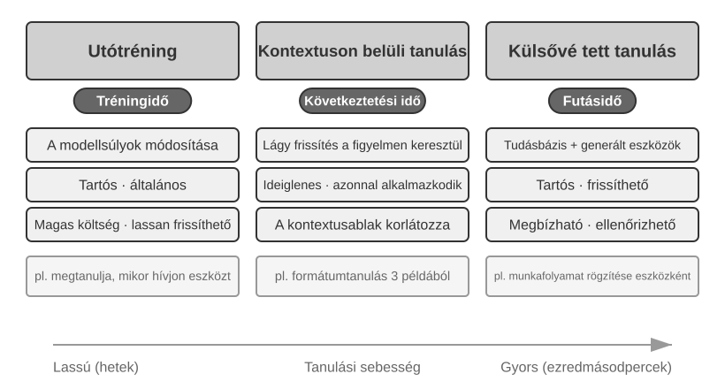
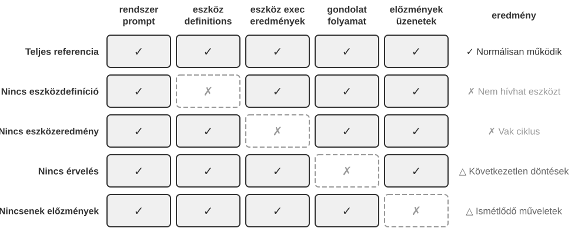
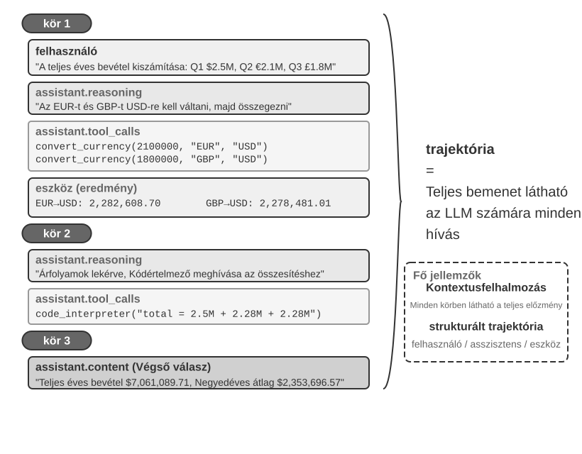
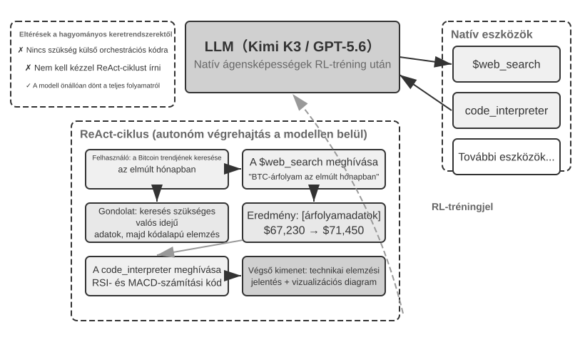
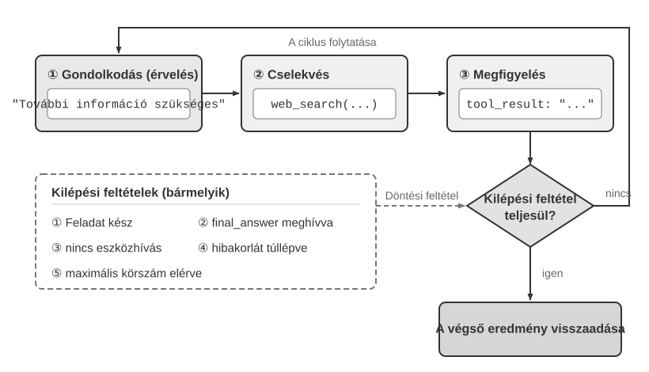

Ismerkedés az AI-ügynökökkel¶
Ha használtad már a Cursort kódírásra, és láttad, ahogy átkutatja a kódbázist, szerkeszt több fájlt, és újrafuttatja a teszteket, amíg azok át nem mennek – akkor már használtál AI-ügynököt (AI Agent). Ugyanez igaz, ha a Deep Research segítségével kutattál egy témát ismételt kereséssel és olvasással, ha a Manus-sal böngészőt vezéreltél online feladatok elvégzésére, ha a Doubao telefonos asszisztenst kérted meg jegyek foglalására vagy üzenetek küldésére, vagy ha a Pine AI-t küldted el alkudni a telefonszámládon.
Ezek a termékek sokféle formát öltenek, de van egy közös jellemzőjük: már nem passzív "te kérdezel, én válaszolok" beszélgetések. Megtervezik a saját végrehajtási lépéseiket, meghívják az egyes feladatokhoz szükséges eszközöket, és az eredmények függvényében módosítják a stratégiájukat. Az AI-ügynökök a számítógépekkel való interakció új módjává válnak.
Ez a fejezet gyakorlati példákkal indul, majd visszavezet az AI-ügynökök alapvető összetevőihez: az olvasók első kézből tapasztalhatják meg, mire képesek a modern ügynökök, megérthetik a mögöttes architektúrát, és elsajátíthatják az ügynökrendszerek építésének tervezési mintáit és bevált gyakorlatait.
"Olvasási tipp": Ez a fejezet az egész könyv koncepcionális térképe: tömör áttekintés a központi formuláról, a működési ciklusról, a mérnöki keretrendszerről és az ügynöktervezési mintákról. Megalapozza a későbbi fejezetekben használt közös szókincset és referenciapontokat. Ne próbáld meg az első olvasáskor az összes fogalmat megjegyezni; a nagy képre koncentrálj. Minden későbbi fejezet egy-egy itt bevezetett szempontot fejt ki részletesen, és bármikor visszatérhetsz ehhez a fejezethez, ha újra kell tájékozódnod.
Modern ügynök = LLM + Kontextus + Eszközök¶
Egy modern ügynökrendszer lényege egy tömör képletbe foglalható: Ügynök = LLM (Nagy nyelvi modell) + Kontextus + Eszközök. A képlet egyszerű és gyakorlatias – feltéve, hogy minden tagot tágan értelmezünk:
- "Az LLM az ügynök érvelőmotorja": Több, mint paraméterek halmaza; ez az ügynök döntéshozó központja, amely a szándék megértéséért, az érvelésért, a tervezésért és az ítéletalkotásért felelős. Az LLM képességei az "előtanítás" (pre-training) során megszerzett világismeretből és nyelvi készségekből, valamint az "utótanítás" (post-training) során kódolt döntéshozatali stratégiákból származnak (az olyan technikák, mint a felügyelt finomhangolás és a megerősítéses tanulás a 7. fejezetben kerülnek kifejtésre).
- "A kontextus az ügynök aktuális információhalmaza": Nem csupán a modellbe táplált szöveg, hanem az ügynök számára az egyes döntési pontokon elérhető információhalmaz – a környezet, a felhasználó memóriája, a tartományi tudás, a saját állapota és a feladat előrehaladása. Ahogy egy döntést hozó embernek is fel kell mérnie a helyzetet, emlékeznie kell a releváns tapasztalatokra és konzultálnia kell a forrásokkal, az ügynök kontextusablaka (context window) is az adott pillanatban felhasználható információkat tartalmazza.
- "Az eszközök az ügynök cselekvési interfészei": Nem csupán néhány meghívható API-függvény, hanem az összes mód, ahogy az ügynök cselekedhet – az előre definiált eszközhívásoktól a menet közben betöltött készségekig (Skills), a kódgenerálástól az új képességek menet közbeni létrehozásán át a feladatok al-ügynököknek delegálásáig, a felhasználó megkeresésétől a külső eseményekre adott válaszig.
Intuitívabban megfogalmazva: Ügynök = Érvelőmotor + Aktuális információhalmaz + Cselekvési interfészek. A modell érvel és dönt, a kontextus biztosítja az információhalmazt, amelyre a döntések támaszkodnak, az eszközök pedig azokat az interfészeket nyújtják, amelyeken keresztül a döntések hatással vannak a külvilágra.
Ez a három összetevő pontosan megfelel a megerősítéses tanulás (RL) három alapfogalmának (lásd 7. fejezet). A következő táblázat "opcionális olvasmány" – ha nincs RL háttered, nyugodtan ugorj át; semmi a későbbiekben nem épít rá. Csupán azoknak az olvasóknak szól, akik ismerik az RL-t, hogy rá tudják illeszteni a tudásukat e könyv terminológiájára:
| Intuíció | Ügynök-összetevő | RL fogalom (opcionális) | Szerep |
|---|---|---|---|
| "Érvelőmotor" | LLM | "Policy" | A döntéshozatali logika, amely meghatározza, hogy "mit tegyünk ezután" – a rendelkezésre álló információk alapján válassza ki a legmegfelelőbb cselekvést az összes lehetséges opció közül |
| "Aktuális információhalmaz" | Kontextus | "Megfigyelési tér (Observation Space)" | Minden információ, ami az ügynök számára elérhető – mit figyelhet meg, olvashat, mire emlékezhet, és mely rendszerekhez férhet hozzá |
| "Cselekvési interfészek" | Eszközök | "Cselekvési tér (Action Space)" | Az összes dolog, amit az ügynök tehet – milyen "eszközök" állnak rendelkezésre, az üzenetküldéstől a kódvégrehajtáson át a felületek vezérléséig |
Megfigyelési és cselekvési terek: A modell és a világ közötti interfész¶
Hennessy és Patterson klasszikus tankönyvében, a Computer Architecture: A Quantitative Approach címűben az 1. fejezet azzal a kérdéssel nyit, hogy "Mi a számítógép-architektúra?", és az "utasításkészlet-architektúrát" (ISA) azonosítja a szoftver és hardver közötti interfészként1. Ez a nézőpont hasznos keretet ad az ügynökök megértéséhez: a megfigyelési tér és a cselekvési tér együtt alkotják az LLM és a külső környezete közötti interfészt. A megfigyelési tér a környezet információit a modell által feldolgozható kontextussá alakítja; a cselekvési tér a modell döntéseit a külvilágra ható műveletekké fordítja. A megfigyelési téren kívüli információ gyakorlatilag nem létezik a modell számára. A cselekvési téren kívüli műveletet a modell csak szavakkal tud javasolni, még ha pontosan tudja is, mit kellene tenni.
Következésképpen ha az alapmodellt rögzítjük, az ügynökteljesítmény javításának elsődleges rendszermérnöki eszköze gyakran a megfigyelési és cselekvési terek újradefiniálása vagy kiterjesztése. A könyv terminológiájában ez a kontextus és az eszközök bővítését jelenti. Sok olyan probléma, amely "okosabb modellt" igényelne, valójában interfészprobléma: hozd be a feladathoz releváns adatokat a kontextusba, vagy tedd elérhetővé a szükséges műveletet eszközként, és egy korábban megoldhatatlan feladat megoldhatóvá válhat a modell újratanítása nélkül.
Manus: terek egyesítése, amelyek korábban különállók voltak. Mielőtt a Manus megjelent, a termelési ügynökök többnyire három különálló irányt követtek: Deep Research, Kódolás és Számítógép-használat (Computer Use). A Manus volt az első széles körben ható termelési ügynök, amely mind a hármat egyetlen rendszerbe hozta. A web kibővítette a megfigyelési terét; a fájlrendszer és a kódvégrehajtás kibővítette a cselekvési terét; a képernyőészlelés a kattintással és gépeléssel együtt a grafikus felületeket is bevonta mindkettőbe. A Manus nem pusztán egy erősebb modell behelyettesítésével vált általános ügynökké. Háromféle ügynök megfigyelési és cselekvési tereinek unióját vette, lehetővé téve, hogy egyetlen ügynök átlépje a korábbi termékhatárokat.
OpenClaw: az interfész kiterjesztése a felhasználó digitális életébe. Az OpenClaw mindkét teret tovább tágítja. Feladatokat fogad és eredményeket ad vissza olyan üzenetküldő csatornákon keresztül, amelyeket a felhasználók már használnak – WhatsApp, Telegram, Slack, Discord, iMessage és még sok más – így az ügynök szinte bárhonnan elérhető. Helyi-első (local-first) Gateway-e a felhatalmazott eszközökkel, bővítményekkel (plugins) és készségekkel (Skills) együtt képes csatlakozni felhőalkalmazásokhoz, mint a Google Drive és a Notion, valamint a helyi fájlrendszerhez. A fiókok és eszközök között szétszórt fájlok így – a felhasználó kifejezett engedélyével – beléphetnek egy ügynök megfigyelési terébe, és az eszközei által módosíthatóvá válhatnak. A Manus eredeti, felhő-sandbox központú formájához képest, ahol a fájlokat általában fel kellett tölteni vagy egy csatlakozót külön konfigurálni, a helyi-első OpenClaw szélesebb adathatárt fog át. A Manus később hozzáadta saját Google Drive csatlakozóját és asztali hozzáférést a helyi fájlokhoz – ami csak megerősíti a pontot: a termékfejlődés gyakran pontosan a megfigyelési és cselekvési terek kiterjesztéséből áll2.
A bővítés nem jelenti azt, hogy minden elérhető tokent és eszközt egyszerre a modellbe kell önteni. Az irreleváns kontextus zajt ad hozzá, míg a túl sok eszköz növeli a kiválasztási költséget és a biztonsági kockázatot. A hasznos bővítésnek "igény szerintinek, relevánsnak és ellenőrzöttnek" kell lennie: a visszakeresésnek a megfelelő információt kell a kontextusba helyeznie, az eszközfelderítésnek csak az éppen szükséges műveleteket szabad elérhetővé tennie, az engedélyeknek és az eredmények ellenőrzésének pedig korlátoznia kell ezeket a műveleteket. A későbbi fejezetek e technikák mindegyikét részletesen tárgyalják.
Az egyes összetevők szerepének és összeillésének megértése az alapja a hatékony ügynökrendszerek építésének. A legkonkrétabb összetevővel – az eszközökkel, vagyis a cselekvési interfészekkel – kezdjük, majd haladunk befelé az LLM és a kontextus felé. Először azonban nézzük meg, hogy a különböző típusú ügynökök hogyan viszonyulnak egymáshoz e három dimenzió mentén:
| Ügynöktermék | Aktuális információhalmaz | Cselekvési interfészek | Stratégia |
|---|---|---|---|
| "Kódoló ügynökök (pl. Cursor)" | Követelménydokumentumok, kódbázis, terminálkörnyezet | Nyitott (belső érvelés, kódkeresés, fájl olvasás/írás, parancsvégrehajtás stb.) | Iteratív fejlesztés: követelmények megértése → releváns kód keresése → kód szerkesztése → tesztelés és ellenőrzés → hibakeresés és javítás |
| "Kereső ügynökök (pl. Deep Research)" | Webes források, tudományos adatbázisok, helyi fájlok | Nyitott (belső érvelés, keresőlekérdezések, webes olvasás, összefoglalók generálása) | Iteratív mélyítés: keresési irány módosítása a meglévő információk alapján, fokozatosan egy teljes jelentés szintetizálása |
| "Számítógép-vezérlő ügynökök (pl. Browser Use)" | Számítógép képernyő, böngészőoldalak, fájlrendszer | Nyitott (belső érvelés, kattintás, gépelés, görgetés, képernyőképek, kódvégrehajtás stb.) | Vizuális észlelés + művelet: képernyő megfigyelése → célelemek azonosítása → műveletek végrehajtása → eredmények ellenőrzése |
| "Telefonos asszisztens ügynökök (pl. Doubao)" | Telefon képernyő, telepített alkalmazások | Nyitott (belső érvelés, kattintás, lapozás, gépelés, alkalmazások megnyitása stb.) | Szándék felismerése + Alkalmazás-vezérlés: felhasználói igény megértése → célalkalmazás megtalálása → műveletek végrehajtása → teljesítés megerősítése |
| "Személyes feladatügynökök (pl. Pine AI)" | Felhasználói fiókinformációk, korábbi számlák, szolgáltatói tudásbázis | Nyitott (belső érvelés, telefonálás, e-mailezés, űrlapkitöltés, megerősítés kérése a felhasználótól) | Többlépéses feladatvégrehajtás: információgyűjtés → alkudozási stratégia kialakítása → szolgáltató felkeresése → alkudozás → eredmények jelentése |
Ezek a rendszerek három jellemzőt osztanak meg: "nyitott cselekvési teret" – nem egy rögzített gombkészletből választanak, hanem tetszőleges természetes nyelvet és kódot generálnak; "belső érvelést" – tervezés a cselekvés előtt; és "folyamatos interakciót" – stratégia módosítása a környezeti visszajelzések alapján. Ezek a képességek pontosan az érvelőmotor, az aktuális információhalmaz és a cselekvési interfészek – vagyis az LLM, a kontextus és az eszközök – együttműködéséből származnak.
Eszközök: Az ügynök cselekvési interfészei¶
Az eszközök az ügynök hídjai a külvilághoz. Az ügynököt passzív megfigyelőből aktív rendszerré változtatják, amely képes keresni, fájlokat írni, kódot futtatni, API-kat hívni, üzeneteket küldeni vagy felületeket vezérelni. Eszközök nélkül az ügynök szöveggenerálásra korlátozódik; velük képes hatni a külső rendszerekre.
Az eszközök szisztematikus tárgyalásához öt típusba sorolhatjuk őket aszerint, hogy az ügynök milyen irányban lép interakcióba a világgal. Ebben a szakaszban az egyes típusok reprezentatív forgatókönyveinek rövid áttekintése elég a nagy kép felvázolásához; a későbbi fejezetek mindegyiket részletesen tárgyalják.
"Észlelő eszközök (Perception Tools)" lehetővé teszik az ügynök számára az információk elérését: a keresőmotorok valós idejű webes adatokat, a fájlrendszerek helyi dokumentumokat, az API-k és adatbázisok pedig külső szolgáltatásokat és vállalati alapadatokat szolgáltatnak.
"Végrehajtó eszközök (Execution Tools)" lehetővé teszik az ügynök számára, hogy külső rendszerekre hasson: a kódvégrehajtás, a fájlműveletek, a rendszerparancsok és a külső API-hívások a döntéseket konkrét cselekvésekké alakítják.
"Együttműködő eszközök (Collaboration Tools)" lehetővé teszik az ügynök számára a munka megosztását más ügynökökkel: specializált feladatok delegálása al-ügynököknek, emberi megerősítés kérése kulcsfontosságú döntési pontokon, vagy cselekvések összehangolása több ügynökből álló rendszerekben.
"Eseményindító eszközök (Event Trigger Tools)" alapvetően más módon kerülnek meghívásra, mint az első három kategória: az ügynök nem hívja őket; külső bemenetként érkeznek, amelyek elindítják az ügynök munkáját. Új e-mail érkezik, beállított időpont elérkezik, vagy egy másik rendszer Webhook-visszahívást küld; az esemény aktiválja az ügynököt, és elindítja az érvelést és a cselekvést. Az ügynök soha nem hívja ezeket maga, mégis csatornát képeznek, amelyen keresztül a külvilággal interakcióba lép, ezért a tágabb eszközrendszer részének tekintjük őket.
Felhasználói kommunikációs eszközök (User Communication Tools) azok a csatornák, amelyeken keresztül az ügynök kommunikál a felhasználóval. Míg a végrehajtó eszközök megváltoztatják a külvilágot, a kommunikációs eszközök információt hordoznak – az ügynök előrehaladásának vagy egy proaktív bejelentkezésnek a kézbesítése szöveges üzenetben, hanghívásban, e-mailben stb.
A 4. fejezet az öt típus teljes taxonómiáját és tervezési elveit tárgyalja. Az eszköztervezés minősége közvetlenül meghatározza, hogy egy ügynök mit képes megbízhatóan végrehajtani: ha az interfészek homályosak, a modell helytelenül használja őket; ha a hibakezelés gyenge, egyetlen meghibásodott eszköz is beragaszthatja az ügynököt; ha az engedélyek túl tágak, egyetlen ügynökhiba visszafordíthatatlanná válhat. Ahogy az MCP (Model Context Protocol) szabvány terjed, egy eszköz integrálása olyan egyszerűvé válik, mint egy bővítmény telepítése – az ökoszisztéma gyorsan bővül, de a tervezési elvek nem avulnak el.
"Tool Calling" (más néven Function Calling) a modern LLM-ügynökök egyik alapvető képessége: lehetővé teszi a modell számára, hogy strukturált módon hívjon külső eszközöket, átalakítva az LLM-et tiszta szöveggenerátorból intelligens rendszerré, amely képes külső interfészeken keresztül cselekedni. Ez a könyv végig a "tool calling" kifejezést használja.
A tool calling négy lépésben zajlik: először a kontextus tájékoztatja a modellt arról, hogy mely eszközök állnak rendelkezésre (nevek, célok, paraméterek); majd a modell saját maga dönti el, hogy hív-e eszközt, melyiket és milyen argumentumokkal; ezután, miután az eszköz lefutott, az eredmény hozzáfűződik a kontextushoz; végül a modell az eredmény alapján dönt a következő lépésről. Ez a ciklus a ReAct alapja, amelyet a fejezet később mutat be.
Egy időjárás-lekérdezés esetén a négy lépéses folyamat API-szintű egyszerűsített reprezentációja a következő:
1. lépés: Eszközök deklarálása 2. lépés: Modell úgy dönt, meghívja
tools: [{ assistant: {
name: "get_weather", tool_calls: [{
parameters: { function: "get_weather",
city: "string" arguments: {city: "Beijing"}
} }]
}] }
3. lépés: Eredmény hozzáfűzése 4. lépés: Modell válaszol az eredmény alapján
tool: { assistant: {
tool_call_id: "call_1", content: "Ma Pekingben: 28°C, napos."
content: '{"temp":28,"sky":"clear"}' }
} }
A fejlesztő csak az eszközöket definiálja és hajtja végre a hívásokat; a modell maga dönti el, hogy hív-e eszközt, melyiket és milyen argumentumokkal. A 2. fejezet ezt az API-struktúrát vizsgálja részletesen.
Amikor eszközöket tervezünk egy ügynök számára, kezdjük a feladat által megkövetelt legszűkebb képességgel, majd fokozatosan bővítsük, ahogy a feladat bonyolultabbá válik. Ha a feladat csak alapvető számtani műveleteket igényel, egy jól definiált paraméterekkel rendelkező számológép elegendő; amikor azonban táblázatok olvasására, hiányzó értékek tisztítására, statisztikák számítására és diagramok rajzolására bővül, egy korlátozott Python kódértelmező könnyebben kombinálható és felfedezhető, mint egy folyamatosan növekvő specializált eszközgyűjtemény. Az általánosság azonban növeli a hibák kockázatát és tágítja a támadási felületet: a kódot elszigetelt sandboxban kell futtatni, alapértelmezés szerint letiltott hálózati hozzáféréssel, hozzáféréssel csak az engedélyezett munkakönyvtáron kívüli fájlokhoz, valamint korlátokkal a végrehajtási időre, CPU-ra, memóriára és kimeneti méretre vonatkozóan.
Hasonlóképpen, egy egyszerű naplózó eszköz megfelelő egyetlen végrehajtás rögzítésére; a több óráig vagy akár napokig tartó hosszú futású feladatokhoz egy ellenőrzött virtuális munkakönyvtár megőrizheti a terveket, a köztes eredményeket, a végrehajtási naplókat és a végső artefaktumokat, így az ügynök több futamon keresztül is folytathatja a munkát. Ennek a könyvtárnak korlátoznia kell az olvasható és írható elérési utakat, a tárolókapacitást és a fájltípusokat, valamint meg kell akadályoznia az útvonal-átjárást (path traversal) ahelyett, hogy a teljes gazdafájlrendszert kitenné az ügynöknek.
Az általános célú eszközök nem mindig jobbak a speciálisaknál. A magas kockázatú műveleteket vagy a szigorú üzleti korlátok által szabályozottakat – mint a fizetések, adattörlés, e-mail küldése és éles üzembe helyezés – továbbra is dedikált eszközökként kell elérhetővé tenni, explicit paraméterekkel, korlátozott engedélyekkel és végpontok közötti naplózhatósággal, szükség esetén előnézettel és emberi megerősítéssel kiegészítve. Az eszköztervezés központi elve ezért: használj általános célú alapképességeket a kombinációhoz és felfedezéshez; használj speciális eszközöket a magas kockázatú műveletek korlátozásához és a szigorú üzleti szabályok érvényesítéséhez.
LLM: Az ügynök érvelőmotorja¶
A nagy nyelvi modell (LLM) az ügynök döntéshozó központja. Egy felhasználói kérés alapján először ki kell következtetnie a valódi szándékot (amit a felhasználók mondanak, gyakran nem az, amit valójában akarnak), majd egy homályos vagy összetett feladatot végrehajtható lépésekre kell bontania. A végrehajtás során folyamatosan döntéseket hoz: mit tegyen ezután, hívjon-e eszközt, melyiket és milyen argumentumokkal. Ez a megértés–tervezés–végrehajtás képesség az előtanítás során felhalmozott tudásból származik, és ez az az alap, amelyre a munkafolyamatok és az autonóm ügynökök egyaránt támaszkodnak.
Az LLM-ügynökök egyik jellegzetes képessége a "belső érvelés" – cselekvés előtt az ügynök képes megtervezni és átgondolni a feladatot. Ez nem változtatja meg a külső környezetet, mégis észrevehetően javítja az azt követő cselekvéseket. Ez a képesség az előtanításból (a kezdeti képzés hatalmas mennyiségű internetes szövegből, amelyen keresztül a modell megtanulja a nyelvi mintákat és a világismeretet) származik: a modell az emberi tudásba kódolt érvelési mintákra támaszkodik, beleértve a matematikai törvényeket, az ok-okozati összefüggéseket és a problémabontási stratégiákat. Egy ügynök érvelése ezért nem vak próbálkozás; strukturált tudásra épül.
Ez a strukturált érvelés lehetővé teszi az LLM-ügynök számára, hogy teljesen új feladatokat kezeljen előzetes példák nélkül – két fogalom, a zero-shot és a few-shot, illusztrálja ezt a pontot. A közvetlen megnyilvánulás a "Zero-shot Generalizáció": egy soha nem látott feladattal szembesülve az ügynök a már meglévő tudásának újrakombinálásával oldja meg, példák nélkül. A modellt soha nem tanították kifejezetten kvantumfizikáról szóló vers írására, mégis képes egy elfogadható verset alkotni a nyelvről és fizikáról meglévő tudásából.
Néhány példával egy LLM-ügynök "Few-shot Adaptációra" is képes: két-három demonstráció az utasításban (prompt) elegendő egy új feladatminta megtanulásához. Ha megmutatunk néhány "felhasználói megjegyzés -> érzelem címke" példát, képes besorolni az új megjegyzések érzelmi töltetét. Röviden: a zero-shot azt jelenti, hogy a feladat megoldása példák nélkül történik; a few-shot azt, hogy a minta megtanulása kis számú példából.
Modell mint ügynök: Amikor a modell maga válik termékké¶
A "Model as Agent" paradigma az AI-ügynökfejlesztés legújabb iránya. A fejlett modellek az utótanítás (különösen a megerősítéses tanulás) révén natív képességként sajátítják el a tool calling használatát: mikor hívjanak eszközt, melyiket és milyen argumentumokkal – a modell dönt minderről, nincs szükség manuális összehangolásra. Ez nem teszi kevésbé fontossá a keretrendszer réteget. Éppen ellenkezőleg: minél erősebb a modell, annál fontosabb a körülötte lévő Harness. Az ügynök kontextusában a Harness az a mérnöki infrastruktúra, amely a modell képességeit megbízható feladatvégrehajtássá csatornázza. Magában foglalja a kontextuskezelést, az eszközinterfészeket, a biztonsági korlátokat, valamint az ellenőrzési és javítási mechanizmusokat (lásd a fejezet utolsó részét).
Minél nagyobb döntési jogköre van egy modellnek, annál nagyobb a rossz döntés hatása – ami finomabb korlátozást, ellenőrzést és javítást igényel a megbízhatóság fenntartásához. A modellszolgáltatók valódi előnye nem az, hogy "vékonyabbá teszik a keretrendszert", hanem hogy képesek együtt optimalizálni a modellt és a körülötte lévő Harness-t, folyamatosan iterálva.
De felmerül egy mélyebb kérdés: ha a modellek folyamatosan erősödnek, vajon a mai Harness végül beépül-e a modellbe? Rich Sutton "The Bitter Lesson" című írásában visszatekintett egy az AI-kutatás hetven éve alatt ismétlődő mintára3: a kutatók újra és újra belekódolták egy terület megértését egy rendszerbe, rövid távú nyereséget érve el, de végül alulmaradtak az általános módszerekkel – a kereséssel és tanulással – szemben, amelyek a számítási kapacitással és az adatokkal skálázódnak. Ezen a lencsén keresztül nézve: a Harness-ben lévő korlátozás, ellenőrzés és javítás mekkora része "emberi előfeltételezés", amelyet a modell végül interiorizálni fog? A könyv álláspontja nyolc szóban foglalható össze: "irányt támogatni, tempóval reálisnak lenni". Irányát tekintve nem kérdőjelezzük meg, hogy a modellek továbbra is magukba szívják a Harness részeit – a tool calling és a hosszú távú tervezés egykor külső összehangolásra szorult, ma már natív modellképességek. A gyakorlatban azonban ez a beépülés sokkal lassabb, mint az intuíció sugallja: a tréning hónapok skáláján halad, és egyetlen modell sem képes egyetlen menetben interiorizálni a valós üzleti környezet összes korlátját és preferenciáját. A modell aktuális képességbeli határa pontosan az a pont, ahol a Harness értéket teremt. A Harness-mérnöki tevékenység ezért nem ellenállás a Bitter Lesson-nel szemben, hanem annak gyakorlása egy mérnöki időskálán: amit a modell még nem tud megbízhatóan megtenni, azt a Harness fedezi le először; amikor a modell interiorizál egy újabb réteget, a Harness ledobja azt a réteget, és továbblép a következő képességbeli határ támogatására. Ez a gondolatmenet végigfut a könyvön – a 2. fejezet gyakorlati választ ad a kontextusmérnökség szemszögéből, a 8. fejezet tovább tárgyalja, hogyan választja ki és érvényesíti az ügynök a következő rendszerfrissítést a működési tapasztalatokból, az Utószó pedig visszatér a teljes válaszhoz arra a kérdésre, hogy vajon a modellek magukba szívják-e a Harness-t.
Ügynöktanulási mechanizmusok: A kontextuális adaptációtól a tartós frissítésekig¶
Az előzőekben megjegyeztük, hogy egy modell megerősítéses tanulással interiorizálhatja az eszközhasználati politikákat natív képességként. Az ügynök viselkedésének változásai azonban nem csak a tréning során következnek be. A frissítés helye és időtartama alapján ezek a változások három egymást kiegészítő útvonalként értelmezhetők (1-1. ábra): feladaton belüli kontextuális adaptáció, feladatokon átívelő frissítések külső artefaktumokban, és paraméterfrissítések a tréningciklusok során.

"Kontextuális adaptáció" az aktuális feladaton belül történik. Miután példák, állapot és visszakeresési eredmények belépnek a kontextusba, a modell azonnal módosíthatja a viselkedését, de ez nem változtatja meg a következő munkamenet állandó állapotát. Előnyei a gyorsaság és az alacsony költség; korlátai a kontextusablakból és az információszervezés módjából adódnak. A 2. fejezet részletesen elmagyarázza, hogyan működik az adaptációnak ez a formája.
Ahhoz, hogy a változások feladatokon átívelően fennmaradjanak, a rendszer frissítheti a "külső artefaktumokat": tények és tapasztalatok rendezhetők tudásdokumentumokba, nyelvileg kifejezhető stratégiák írhatók Promptba vagy Skillbe, a determinisztikus eljárások és korlátok pedig programokba és Harness-ekbe kódolhatók. Ezek az artefaktumok naplózhatók és felülvizsgálhatók, de az ügynöknek továbbra is hozzá kell férnie hozzájuk a végrehajtás során a kontextuson vagy az eszközinterfészeken keresztül. A 3–5. fejezetek megalapozzák a tudás és a programok alapjait, míg a 8. fejezet arról szól, hogyan generálhatók ilyen frissítések kiértékelt műveleti trajektóriákból.
Amikor a cél egy magas dimenziójú képesség – például orvosi képértelmezés, természetes nyelvi stílus vagy implicit döntési politika –, amelyet külső szabályok nem képesek teljesen kifejezni, a "modell paramétereit" az utótanításon keresztül kell frissíteni. A paraméterfrissítések magasabb telepítési költséggel járnak, de természetes és széles körű általánosítást eredményezhetnek; a 7. fejezet módszereiket mutatja be szisztematikusan. A három útvonal tehát nem egymást kizáró kategória, hanem különböző időskálákon működő, összehangolt mechanizmus: a kontextus az azonnali adaptációt, a külső artefaktumok az ellenőrzött felhalmozást, a paraméterek pedig a nehezen kifejezhető képességek interiorizálását támogatják.
Kontextus: Az ügynök aktuális információhalmaza¶
A kontextus az ügynök számára az egyes döntési pontokon elérhető információhalmaz. Ahogy egy döntést hozó embernek is szüksége van a megfelelő anyagokra az asztalon – feladatutasításokra, referencia-kézikönyvekre, korábbi levelezésekre, a legfrissebb adatokra –, az ügynök kontextusablaka az az információ, amelyet felhasználhat. Az API szemszögéből (részletesen a 2. fejezetben) az egyes LLM-hívások kontextusa öt részből áll:
- "System Prompt": Ellentétben a felhasználók által beszélgetés közben bevitt utasításokkal, a system promptot a fejlesztő írja, és a teljes beszélgetés során rögzített marad. Ez az ügynök "munkaköri leírása" – meghatározza az identitását, az engedélyeit és a magatartási szabályait. A system prompt gondos Prompt Engineering-je alakítja az ügynök működési viselkedését. A system prompt hordozza a munkameneteken átívelő "felhasználói memóriát" is (személyre szabott információkat, mint preferenciák, korábbi viselkedés és háttérbeállítások; lásd a 3. fejezetet), valamint a dinamikusan injektált környezeti állapotot.
- "Eszközdefiníciók (Tool Definitions)": Deklarálják az ügynök számára elérhető eszközök nevét, funkcionális leírását és paraméterformátumait. Eszközdefiníciók nélkül az ügynök nem ismer fel és nem hívhat semmilyen eszközt – ezt egy abláció (kiirtásos) vizsgálat (1-1. kísérlet) ellenőrizni fogja. Az eszközdefiníciók a system prompttal együtt alkotják a "statikus előtagot" (static prefix), amely a beszélgetés során változatlan marad. (Ez az alapminta; 2026 óta a termelési keretrendszerek igény szerint is betölthetnek teljes eszköz-sémákat a kontextus végén anélkül, hogy megtörnék az előtagot – lásd a 2. fejezet és a 4. fejezet eszközdefiníciós szakaszait.)
- "Felhasználói üzenetek (User Messages)": Bemenet a felhasználótól. A felhasználói üzenetek tartalmazhatnak "külső tudást" is, amelyet dinamikusan, RAG (Retrieval-Augmented Generation, lásd a 3. fejezetet) segítségével keresünk vissza – lefedve a tréningadatok vágási időpontján túli információkat vagy privát tartományi tudást.
- "Asszisztens üzenetek (Assistant Messages)": A modell által korábban generált válaszok, amelyek legfeljebb három részt tartalmazhatnak –
reasoning(a belső gondolatmenet, amely fenntartja a koherenciát és a döntések értelmezhetőségét),content(a válasz a felhasználónak) éstool_calls(ahogy az ügynök cselekszik). Egy adott válaszban ez a három rész nem feltétlenül jelenik meg egyszerre: például amikor az ügynök úgy dönt, hogy eszközt hív, általában csakreasoning+tool_callsvan; amikor végső választ ad, általában csakreasoning+content. - "Eszközeredmények (Tool Results)": Az a kimenet, amelyet az ügynökkeretrendszer az eszköz végrehajtása után visszaad. Ezek az eredmények képezik az ügynök következő érvelési lépésének közvetlen alapját – és teszik lehetővé, hogy tanuljon az eredményekből ahelyett, hogy ismételné a hibáit.
Az első két elem (system prompt + eszközdefiníciók) alkotja a statikus előtagot; az utolsó három (felhasználói üzenetek + asszisztens üzenetek + eszközeredmények) alkotja a dinamikus üzenetelőzményt, amely minden interakcióval növekszik. Ez az öt rész együtt teszi ki az egyes LLM-következtetések kontextusát.
Valóban minden összetevő nélkülözhetetlen? A legközvetlenebb módja ennek kiderítésére egy "ablációs vizsgálat" (ablation study) – a diagnosztikai módszer, amely egyszerre csak egy okot zár ki: távolítsuk el az A összetevőt, és nézzük meg, hogy a rendszer még mindig működik-e, majd a B összetevőt, és így tovább, amíg az egyes összetevők hozzájárulása világossá nem válik. Az 1-1. kísérlet pontosan ezt a módszert alkalmazza a fenti öt összetevőre. Az eredmények közvetlenek: eszközdefiníciók nélkül az ügynök teljesen cselekvésképtelen; eszközeredmények nélkül nem kap visszajelzést az előző lépésről, ezért ugyanazt az eszközt hívja újra és újra, végtelen ciklusba ragadva; az asszisztens üzenetek érvelés nélkül az egymást követő döntések ellentmondani kezdenek egymásnak; üzenetelőzmény nélkül az ügynök elveszíti a feladat folytonosságát, és a legelejéről kezdi újra az egész feladatot, megismételve a már elvégzett lépéseket. Az egyes összetevők szerepe kísérleti bizonyítékokon nyugszik, nem csupán elméleti következtetésen.
1-1. kísérlet ★★: A kontextus kritikus szerepe¶
Szisztematikus "ablációs vizsgálattal" kutattuk, hogy az egyes kontextus-összetevők hogyan alakítják az ügynök viselkedését. A fenti öt összetevő közül négyet teszteltünk – a system prompt, mint az ügynök alapvető identitásdefiníciója, kivétel volt: nélküle az ügynöknek egyáltalán nincs szereptudata, és a teszt értelmetlen lenne. Az 1-2. ábrán látható módon a kísérlet öt kontrollcsoportot futtatott: egy teljes alapvonalat, amely minden összetevőt megtartott, plusz négy csoportot, amelyek mindegyike egy-egy összetevőt hiányolt, hogy megfigyeljük az egyes összetevők hatását az ügynökteljesítményre.

A kísérleti eredmények feltárták az egyes kontextus-összetevők pótolhatatlan szerepét. Az "eszközdefiníciók" (a statikus előtag részei) az ügynök cselekvési képességének alapjai; nélkülük az ügynök nem ismer fel és nem hívhat semmilyen eszközt. Az "eszközeredmények" kulcsfontosságúak a zárt hurkú vezérléshez; hiányuk megfosztja az ügynököt a végrehajtási visszajelzéstől, és végtelen ciklusba taszítja. Az "érvelési folyamat" (az asszisztens üzenetek reasoning része) megőrzi az ügynök korábbi döntéseinek indokait, koherensebbé téve a teljes érvelést és megelőzve az ellentmondó döntéseket. Az "üzenetelőzmény" (korábbi körök felhasználói üzenetei, asszisztens üzenetei és eszközeredményei) megakadályozza a redundáns műveleteket, fenntartja a feladatvégrehajtás koherenciáját, és elkerüli ugyanazon hibák megismétlését.
A kísérlet központi felismerése: a kontextus határozza meg, hogy az ügynök milyen információval rendelkezik a döntés pillanatában, és az ügynök csak ezen információk alapján dönthet. Ahogy egy ember sem hozhat megalapozott döntéseket kulcsfontosságú dokumentumok hiányában, az ügynök is súlyos döntéshozatali képességromlást szenved el bármely kontextus-összetevő hiányában – eszközdefiníciók nélkül nem tudja, milyen eszközök léteznek; korábbi végrehajtási eredmények nélkül nem tudja, mi történt már.
A ReAct ciklus¶
A három összetevő ismeretében természetes kérdés: hogyan működnek együtt? A ReAct ciklus az a központi mechanizmus, amely az LLM-et, a kontextust és az eszközöket egyetlen rendszerré kapcsolja össze. Vizsgáljuk meg lépésről lépésre.
Azt a központi mintát, ahogy egy ügynök egy feladatot végrehajt, "ReAct"-nek (Reasoning + Acting) hívják. A név csak az érvelést és a cselekvést említi, de a tényleges ciklus három szakaszból áll: a modell először "gondolkodik" (reasoning) arról, mit tegyen ezután, majd meghív egy eszközt a "cselekvéshez" (acting), majd "megfigyeli" (observes) az eszköz eredményét, és gondolkodik a következő lépésről. Ez a "gondolkodás → cselekvés → megfigyelés → gondolkodás → cselekvés → megfigyelés" ciklus addig ismétlődik, amíg a feladat el nem készül.
Vegyünk egy konkrét példát – a bevételek összesítését több devizában –, hogy megértsük az ügynök "trajektóriáját" (trajectory): az üzenetelőzményt, amely az ügynök munkája során halmozódik fel, és amely felhasználói üzenetekből, asszisztens üzenetekből (azok érvelésével és eszközhívásaival) és eszközeredményekből áll. Minden egyes LLM-hívásnál a modell által kapott teljes kontextus a "statikus előtag" (system prompt + eszközdefiníciók) plusz a "trajektória" (dinamikus üzenetelőzmény) (1-3. ábra). Ez egy kulcsfontosságú tényt mutat: Ügynök kontextus = statikus előtag + trajektória. Konkrétan: a statikus előtag a fenti öt összetevő közül az első kettő (system prompt + eszközdefiníciók); a trajektória az utolsó három (felhasználói üzenetek + asszisztens üzenetek + eszközeredmények, amelyek minden interakcióval növekednek). Ebből a teljes kontextusból generálja az LLM a következő válaszát, amely aztán hozzáfűződik a trajektóriához a következő híváshoz.

Itt látható egy trajektória szerkezete pszeudokódban:
trajectory = [
{role: "user", content: "A vállalat negyedéves bevételei alapján: Q1 2,5M USD, Q2 2,1M EUR, Q3 1,8M GBP, Q4 380M JPY, számítsd ki a vállalat teljes éves bevételét és az átlagos negyedéves bevételt"},
# Első iteráció - LLM megkapja a fenti trajektóriát és generál egy választ
{role: "assistant",
reasoning: "Az összes devizát USD-re kell váltani...",
content: "", # Nincs közvetlen válasz a felhasználónak
tool_calls: [
{name: "convert_currency", args: {amount: 2100000, from: "EUR", to: "USD"}},
{name: "convert_currency", args: {amount: 1800000, from: "GBP", to: "USD"}},
{name: "convert_currency", args: {amount: 380000000, from: "JPY", to: "USD"}}
]},
# Ügynök keretrendszer végrehajtja az eszközöket, eredményeket ad a trajektóriához
{role: "tool", content: "EUR->USD: 2282608.7"},
{role: "tool", content: "GBP->USD: 2278481.01"},
{role: "tool", content: "JPY->USD: 2541806.02"},
# Második iteráció - LLM megkapja a teljes trajektóriát, beleértve az eszközeredményeket
{role: "assistant",
reasoning: "A konverziós eredmények megvannak, most összesíteni és számolni kell...",
content: "",
tool_calls: [
{name: "code_interpreter", args: {code: "total = 2500000 + 2282608.7 + ..."}}
]},
{role: "tool", content: "Összesen: $9,602,895.73, Átlag: $2,400,723.93..."},
# Harmadik iteráció - LLM megkapja a teljes trajektóriát és generálja a végső választ
{role: "assistant",
reasoning: "Minden számítás kész, az eredmények összefoglalása...",
content: "VÉGSŐ VÁLASZ: Teljes bevétel $9,602,895.73..."}
]
Vegyük észre, hogy a system prompt és az eszközdefiníciók nem jelennek meg a trajektóriában – ezek statikus előtagként szolgálnak, és automatikusan a trajektória elé kerülnek minden egyes LLM-hívás előtt.
A kísérletünkben ez a ciklus jól látható volt. Az első körben az ügynök elemezte a feladatot, és párhuzamosan három devizaváltó eszközt hívott; a másodikban a konverziós eredményeket egy kódértelmezőnek adta át a számításigényesebb aggregációhoz; a harmadikban, miután megerősítette, hogy minden számítás kész, előállította a végső választ. Egy összetett, többlépéses feladat 3 iterációban és 4 eszközhívásban készült el.
A tervezés eleganciája a "kontextus kumulatív természetében" rejlik. Minden egyes LLM-hívás megkapja a teljes trajektóriát, így a modell tudja, hogy a feladat mely szakaszában jár, mit próbált ki korábban, és mi lett az eredmény. Ahogy az emberek is folyamatosan áttekintik és összegzik a problémák megoldása során, az ügynök is egy globális képet tart fenn a feladatról a trajektóriáján keresztül. És mivel a trajektória strukturált – a felhasználói üzenetek, az asszisztens üzenetek (érvelés + eszközhívások) és az eszközeredmények mind tisztán elkülönülnek –, a rendszer jól értelmezhető és hibakereshető.
A trajektória több, mint egy végrehajtási rekord; az ügynök képességének bizonyítéka. A trajektóriák nagy léptékű elemzése feltárja a viselkedésmintákat, a jobb döntési útvonalakat és a jobb eszközterveket. A trajektóriaadatok akár tudásbázisba desztillálhatók, vagy megerősítéses tanulással erősebb ügynökmodellek képzésére használhatók – bezárva a tapasztalatból való tanulás körét.
Most, hogy megértettük az ügynök működési ciklusát, két kísérletet vizsgálunk meg, hogy lássuk, a különböző modellek hogyan vezérlik azt.
1-2. kísérlet ★: Kimi K3 natív ügynökképesség¶
Ez a kísérlet a "Kimi K3" natív ügynökképességét mutatja be, amely a "Model as Agent" paradigma egy példája. A Moonshot AI által 2026-ban kiadott Kimi K3 egy Mixture of Experts (MoE) modell, körülbelül 2,8 billió paraméterrel. A MoE egy szakértői csapatként képzelhető el: minden egyes problématípushoz a rendszer csak a leginkább alkalmas néhány szakértőt aktiválja a teljes modell helyett, megőrizve a képességet anélkül, hogy a teljes hatékonysági költséget kellene fizetni. A Kimi K3 1 millió token kontextusablakkal, natív vizuális megértéssel és mindig bekapcsolt "gondolkodási móddal" rendelkezik. A megerősítéses tanuláson keresztül interiorizálta az eszközhívás "döntési politikáját" natív képességként: mikor hívjon eszközt, melyik eszközt hívja, és milyen argumentumokkal – mindezt a modell dönti el, lehetővé téve olyan feladatok autonóm végrehajtását, mint a webes keresés. Pontosabban: ami interiorizálódik, az a mikor és hogyan hívjon döntése; maguk az eszközök, mint a web_search és a code_runner, továbbra is szerveroldalon, API-szintű beépített eszközökként futnak. A Kimi ezeket a hivatalos eszközöket egy Formula nevű szerveroldali szkriptmotoron keresztül futtatja.
Három megfigyelés fontos itt. Először is, az RL-tréning lehetővé teszi a modell számára, hogy megtanulja, mikor és hogyan használja az eszközöket, így a kliensnek már nem kell kézzel megírnia az eszközhívások összehangolási logikáját. Másodszor, a modell dönti el, hogy mikor keressen és mit keressen, valódi autonómiát mutatva. Harmadszor, az érkező keresési eredmények függvényében módosítja a stratégiáját, és eldönti, hogy van-e elég információja. Érdemes tisztázni egy gyakori tévhitet: a megerősítéses tanulás a döntési politikát adja a modellnek, nem magukat az eszközöket. Arra tanítja meg, hogy mikor hívjon eszközt, melyik eszközt válassza, milyen argumentumokat adjon át, folytassa-e az eredmény kézhezvétele után, és hogyan fűzzön tucatnyi vagy száz hívást koherens érvelésbe; ezek a használatra vonatkozó ítéletek kerülnek bele a modell súlyaiba. Az eszközöket és azok végrehajtását az ügynök keretrendszer vagy API beépített eszközei biztosítják: a web_search és a code_runner implementációi, a kód-sandbox, valamint a hívásokat kiadó és eredményeket visszaadó infrastruktúra mind a modellen kívül él. Az RL optimalizálja a döntési politikát; nem ágyaz be egy keresőmotort vagy kód-sandboxot a modell súlyaiba. Így az összehangolási ciklus nem tűnt el; a kliensről a szerverre költözött, miközben a döntéshozatal a modellbe került4.
A Kimi K3 figyelemre méltó előnye az ügynökfeladatokban "a hosszú láncú eszközhívások stabilitása" – 200–300 egymást követő eszközhívást képes fenntartani koherens érveléssel, messze meghaladva azt a néhány tucat hívást, amelynél a legtöbb modell romlani kezd. A K3-at hosszú távú programozási és ügynök-munkaterhelésekre optimalizálták, és két változatban jelent meg: K3 Max (dialógus- és ügynökfeladatokhoz) és K3 Swarm Max (nagyméretű párhuzamos feldolgozáshoz). Nyílt forráskódú modellként felülmúlja a legjobb zárt forráskódú rendszereket szoftvermérnöki és ügynökmérési feladatokon – bizonyítva, hogy a megerősítéses tanulás natív ügynökképességgel ruházhat fel egy modellt.
1-3. kísérlet ★: GPT-5.6 natív Deep Research képesség¶
A második kísérlet az "OpenAI GPT-5.6"-ot használja annak bemutatására, hogy egy fejlett modell, API-szintű beépített eszközökkel támogatva, hogyan zárja le a "keresés → olvasás → elemzés" összehangolási ciklust szerveroldalon a Deep Research számára. A GPT-5.6 három változatban érhető el – Sol (zászlóshajó frontier modell), Terra (kiegyensúlyozott modell mindennapi munkához) és Luna (gyors, gazdaságos könnyűsúlyú modell) –, amelyek mindegyike natívan a modellre bízza az eszközhívási döntéseket, így a kliensnek nincs szüksége saját összehangolási keretrendszerre. Az egyik kényelmes funkció a "Freeform Tool Calling". Hagyományosan a modellnek minden paramétert szigorú JSON-ba (strukturált adatformátum) kellett szerializálnia egy eszköz hívásakor, hasonlóan egy merev formázási szabályokkal rendelkező űrlap kitöltéséhez. A Freeform tool calling (amelyet az API-ban egy type: "custom" típusú eszközön keresztül deklarálnak) lehetővé teszi a modell számára, hogy nyers szöveget küldjön közvetlenül az eszköznek (egy Python kódrészletet, egy SQL lekérdezést), teljesen elkerülve a JSON escape-elést. Érdemes hangsúlyozni, hogy ez az API paraméterformátumának fejlődése, nem pedig modellarchitektúra-innováció – a kliens eszközhívási ciklusa (tool_calls észlelése → végrehajtás → eredmény visszaadása) ugyanaz marad; csak az argumentumok változnak JSON stringről nyers szövegre. A GPT-5.6 bevezet egy Verbosity paramétert (a kimenet részletességének szabályozása) és egy Reasoning Effort paramétert (az érvelési mélység beállítása; a Sol egy max szintet ad a legaprólékosabb érvelési időhöz), lehetővé téve a fejlesztők számára, hogy a modell viselkedését a feladat bonyolultságához igazítsák.
A GPT-5.6 a Responses API "webes keresés és kódértelmező" beépített eszközeivel párosítva biztosítja a Deep Research alapvető mechanizmusát: a modell autonóm módon kereshet a weben valós idejű információkért, és írhat kódot mélyreható elemzéshez, lehetővé téve a "keresés → olvasás → elemzés → újra keresés" iteratív kutatási folyamatot. Például egy olyan kérdéssel szembesülve, mint "Mi a legrövidebb távolság a 10 ASEAN-ország fővárosai között?", a GPT-5.6 automatikusan megkeresi az egyes fővárosok földrajzi koordinátáit, majd Python kódot ír a nagy kör távolság kiszámításához az összes fővárospár között, végül azonosítva a legközelebbi párt. Hasonlóképpen, egy olyan feladatban, mint "Keresd meg a Bitcoin trendjét az elmúlt hónapban, és végezz technikai elemzést", valós idejű áradatokat kérhet le több pénzügyi adatforrásból, professzionális technikai elemző könyvtárakat használhat a mozgóátlagok, RSI, MACD és más technikai indikátorok kiszámításához, vizuális diagramokat generálhat, és kereskedési javaslatokat adhat.
Ennél is fontosabb, hogy a GPT-5.6 interiorizálja az "OpenAI Deep Research" termék tervezési filozófiáját modellszinten, bevezetve egy "szándéktisztázási folyamatot". Egy kutatási kérés esetén a GPT-5.6 nem kezdi meg azonnal a végrehajtást; először egy sor kérdéssel tisztázza a felhasználó valódi szándékát. A "Keresd meg a Bitcoin trendjét az elmúlt hónapban, és végezz technikai elemzést" kérésre először megkérdezné: "Melyik adatforrást részesíti előnyben? Milyen technikai indikátorokat szeretne elemezni?" Ez az interaktív tisztázás lehetővé teszi a GPT-5.6 számára, hogy pontosabb kutatási jelentéseket készítsen, amelyek jobban igazodnak a felhasználó tényleges igényeihez.
A GPT-5.6 a "Model as Agent" érett példája – a webes keresés, a kódértelmező és a Responses API más beépített eszközei zárt hurokban futnak a szerveren; az összehangolási ciklus a kliensről az API szerverre költözik, ami egyszerűsíti a kliens implementációt. A modell továbbra is szabványos eszközhívásokat bocsát ki; a kliensnek egyszerűen már nem kell magának felépítenie a "keresés → olvasás → elemzés" összehangolási keretrendszert. A legfigyelemreméltóbb szempont a szándéktisztázási mechanizmus: ahelyett, hogy azonnal végrehajtaná a feladatot, a modell először megerősíti, hogy a felhasználónak valójában mire van szüksége, majd kutatási stratégiát fogalmaz meg. Az "amit a felhasználó mondott" és az "amit a felhasználó ténylegesen akar" közötti szakadék a végrehajtás megkezdése előtt áthidalásra kerül.
Az 1-4. ábra a natív eszközhívás teljes architektúráját mutatja a "Model as Agent" paradigma alatt, valamint a Kimi K3 és a GPT-5.6 ReAct végrehajtási folyamatát valós feladatokban.

Harness Engineering: Versenyképesség a modellen túl¶
Mára már érted, hogyan működik egy ügynök a magjában: egy LLM futtatja a ReAct ciklust, kontextus által vezérelve, eszközökkel végrehajtva a feladatot. A fenti kísérletek megmutatják, hogy az alapmechanizmus működik – és azt is felfedik, mennyire törékeny. A modell hallucinálhat (nem létező eszközöket vagy paramétereket találhat ki), rossz eszközt választhat, vagy nem tud felépülni egy hibából. A működő demó és a megbízható termék között jelentős szakadék van, és ezek a törékenységek pontosan azok, amelyeket a Harness Engineering hivatott kijavítani. A fejezet első fele arra a kérdésre válaszolt, hogy mi az ügynök; a második fele arra, hogyan működik egy ügynök megbízhatóan éles üzemben.
Az előző részek megalapozták a központi képletet: Ügynök = LLM + Kontextus + Eszközök. Ez az ügynök "belső összetételét" írja le: érvelőmotor, aktuális információhalmaz és cselekvési interfészek. A Harness Engineering hozzáad egy második, "implementációs szintű" nézetet ugyanerről a rendszerről: kezeld az LLM-et mint egy központi összetevőt (a Modell), és nevezd az összes köré épített támogató kódot Harness-nek. A két nézet nem versenytárs; ugyanazt a rendszert írják le az absztrakció különböző szintjein. Átváltunk az általánosabb "Modell" szóra, mert a Harness Engineering alapelvei bármely olyan modellre alkalmazhatók, amely képes érvelni és eszközöket hívni, nem egy adott típusra. A Harness magja az eredeti képlet "Kontextus + Eszközök" része, plusz három védelmi réteg: "Korlátozás" (Constrain – mit tehet és mit nem az ügynök), "Ellenőrzés" (Verify – helyesen csinálta-e) és "Javítás" (Correct – hogyan állítsuk helyre, ha nem).
Kibontva egyenletként, a teljes éles üzemi összetétel:
Ügynök = LLM + [Kontextus + Eszközök + Korlátozás + Ellenőrzés + Javítás] = Modell + Harness
Egy minimálisan működő ügynök csak LLM-ből, kontextusból és eszközökből áll. Ahhoz, hogy hosszú futású éles munkaterhelésekben megbízhatóan működjön, a három külső mérnöki rétegre is szükség van – korlátozás a túlkapások megelőzésére, ellenőrzés a hibák észlelésére, javítás a hibákból való felépülésre. Ezek a rétegek nem utólag hozzáadott önálló modulok; a "Kontextus + Eszközök" köré tekert védőhálók. Másképpen fogalmazva: a minimális képlet a demó nézet, a kibővített képlet az éles üzemi nézet – az utóbbi teljes egészében tartalmazza az előbbit, és egy biztonsági hálót ad hozzá.
Egy példa tisztázza a határokat: a visszatérítési szabályzat beágyazása a kontextusba a "Kontextus" alá tartozik, míg annak ellenőrzése, hogy a visszatérítés összege nem haladja meg a rendelés összértékét, a "Korlátozás" alá. Egy API-hívás végrehajtása az "Eszközök" alá tartozik, míg az automatikus újrapróbálkozás az API időtúllépése után a "Javítás" alá. A modell szolgáltatja az alapvető megértést és érvelést; a Harness irányítja, korlátozza és erősíti ezeket a képességeket megbízható feladatvégrehajtássá. A tervezés és optimalizálás mérnöki gyakorlatát a modellen kívüli infrastruktúra számára "Harness Engineering"-nek nevezzük.
Egy konkrét példa mutatja a Harness értékét. Tegyük fel, hogy megkéred az ügynököt, hogy térítse vissza egy felhasználó 3 nappal ezelőtti rendelését. "Harness nélkül": a modell nem kapja meg a visszatérítési szabályzatot (nincs kontextus), nem tudja, melyik API-t hívja (nincsenek eszközök), kitalál egy visszatérítési eredményt a felhasználónak (nincs ellenőrzés), és a felhasználó rájön, hogy a visszatérítés soha nem történt meg (nincs javítás). "Harness-szel": a system prompt meghatározza a 7 napos visszatérítési szabályzatot (kontextus), az ügynök meghívja a query_order és process_refund eszközöket a művelet végrehajtásához (eszközök), a keretrendszer ellenőrzi, hogy a visszatérítés nem haladja meg a rendelés összértékét (korlátozás), megerősíti az adatbázisban, hogy a visszatérítés megtörtént (ellenőrzés), és automatikusan újrapróbálkozik, ha az API-hívás időtúllépés miatt meghiúsul (javítás). Ugyanaz a modell, jelentősen eltérő eredmények.
Röviden: egy modell Harness nélkül lehet nagyon képzett, de hiányoznak belőle a megbízható feladatvégrehajtáshoz szükséges környező vezérlőelemek.
Pontosabban: minden, a modellen kívüli infrastruktúra a Harness-hez tartozik. A Harness magja a Kontextus és az Eszközök, amelyek köré háromféle mérnöki védelmi mechanizmus épül:
| Funkció | Egymondatos felelősség | Kapcsolat a Kontextussal/Eszközökkel |
|---|---|---|
| "Kontextus" | Releváns információkat biztosít a modellnek | Alapképesség |
| "Eszközök" | Cselekvési interfészeket biztosít a modellnek | Alapképesség |
| "Korlátozás" | Viselkedési határokat szab meg – mit szabad és mit nem | Kontextus és eszközök köré épített biztonsági határ |
| "Ellenőrzés" | Automatikusan megítéli az eszköz-végrehajtási eredmények helyességét | Eszköz-végrehajtási eredmények köré épített ellenőrző mechanizmus |
| "Javítás" | Automatikusan helyreállít vagy visszaállít, ha problémát talál | Eszközhívási hibák köré épített helyreállítási mechanizmus |
A Kontextus és az Eszközök lehetővé teszik az ügynök számára a feladatok elvégzését – a feladat megértését és a cselekvést. A Korlátozás, Ellenőrzés és Javítás biztosítja, hogy ezt megbízhatóan és biztonságosan tegye – nem a Kontextustól és Eszközöktől elkülönülve, hanem annak a mérnöki munkának a részeként, amely megbízhatóan működteti őket éles üzemben. Az ügynöktermékek érettségi görbéje mentén a hangsúly e két csoport között eltolódik.
A korai ügynökkeretrendszerek a Kontextusra és Eszközökre összpontosítottak: adj eszközöket a modellnek, adj kontextust, és hagyd, hogy elvégezze a feladatokat. Az éles üzemre szánt rendszerek súlypontja a Korlátozásra, Ellenőrzésre és Javításra tolódott: annak biztosítása, hogy az eszközhívások biztonságosak legyenek, a kontextus kezelve legyen, és a hibák helyreállíthatók legyenek.
Vegyük a Claude Code-ot. A Harness kódjának túlnyomó többsége Korlátozást, Ellenőrzést és Javítást végez, nem Kontextust és Eszközöket – maguk az eszközök (fájl olvasás/írás, parancsvégrehajtás, keresés) csak egy kis részt képviselnek; a köréjük épített védelmi mechanizmusok a valódi mag. Ezek a mechanizmusok a következőket foglalják magukban:
- "Folyamatállapot-kezelés (Process State Management)": Nyomon követi, hogy az ügynök éppen melyik lépést hajtja végre
- Többrétegű kontextus-tömörítés (Multi-Layer Context Compression): Automatikusan ritkítja az információt, ha túl sok van belőle
- "Engedélybesorolás (Permission Classification)": Szabályozza, hogy mely műveletek igényelnek felhasználói megerősítést
- "Megszakító (Circuit Breaker)": Automatikusan leállítja az újrapróbálkozásokat ismételt hibák után, hogy egy meghibásodott művelet ne kaszkáddjon át az egész rendszeren
- "Hibakezelési mechanizmusok (Error Recovery Mechanisms)": Kivételek elkapása, visszaállás az utolsó stabil állapotba, újrapróbálkozás, vagy átadás egy emberi kezelőnek
Az iparág a feladatvégrehajtásról a megbízható feladatvégrehajtásra vált, így a Harness Engineering válik az ügynökrendszerek központi versenyelőnyévé.
A Prompt Engineering-től a Loop Engineering-ig: A mérnöki paradigmák fejlődése¶
Visszatekintve az AI alkalmazásmérnökség fejlődésére, egy világos evolúciós ív rajzolódik ki:
A "Software Engineering" az alap – hagyományos rendszertervezés, architektúra, tesztelés és telepítés. A "Prompt Engineering" volt az innováció első hulláma – a kimenet minőségének javítása a modellnek adott természetes nyelvi utasítások finomításával. A "Context Engineering" volt a második hullám – annak felismerése, hogy a prompt önmagában való optimalizálása nem elég: a modell aktuális információhalmazát (rendszerutasítások, eszközdefiníciók, beszélgetési előzmények, külső tudás) szisztematikusan kell kezelni. A "Harness Engineering" volt a harmadik hullám – kitágítja a nézőpontot arról, hogy "milyen információt kap a modell" arra, hogy "milyen rendszerben fut a modell", magába foglalva minden, a modellen kívüli infrastruktúrát: korlátozó mechanizmusokat, ellenőrzési módszereket, visszacsatolási hurkokat, hibajavítást. A "Loop Engineering" következett ezután, kitágítva a nézőpontot egyetlen futásról a futásokon átívelő, tartós autonóm működésre: ki fedezi fel a következő munkadarabot, mikor kell ellenőrizni, és mikor számít a feladat valóban késznek (a 10. fejezet ezt a több ügynökből álló együttműködési rendszerekkel együtt tárgyalja).
2026 júliusában az iparág elkezdte használni a "Graph Engineering" kifejezést egy magasabb szintű összehangolási perspektívára: az ügynökciklusok, determinisztikus programok és emberi jóváhagyások szervezése explicit végrehajtási gráfba, ahol a csomópontok képességeket, az élek útválasztást és függőségeket határoznak meg, a strukturált állapot pedig ezen élek mentén halad, és kulcsfontosságú határokon perzisztálásra kerül.5 A Graph Engineering nem helyettesíti a Loop Engineering-et, és nem is szabad egyszerűen "hatodik rétegként" kezelni a fenti felsorolásban. Egy ciklus maga is egy gráf visszacsatoló éllel, és a gráf egy csomópontja továbbra is futtathat ReAct-ot vagy más ügynökciklust belsőleg. Az elnevezés még nem stabilizálódott, ezért a könyv feltörekvő terminológiaként kezeli a meglévő összehangolási és Harness gyakorlatok számára; a 10. fejezet a több ügynökös részt fejti ki. Itt a "gráf" vezérlési folyamot vagy végrehajtási gráfot jelent, nem a GraphRAG által használt tudásgráfot.
Ez az öt szakasz nem helyettesítő, hanem egymásba ágyazott rétegek: a Prompt Engineering a Context Engineering része, amely a Harness Engineering része, amely a Loop Engineering része. Minden egyes réteg szélesíti a mérnök látókörét és befolyását az előzőhöz képest. Ahogy a modellek képességben konvergálnak, és megszűnnek a döntő megkülönböztető tényező lenni, a versenyelőny a modellen kívüli mérnöki munkára helyeződik át. A közelmúlt mérnöki gyakorlata alátámasztja ezt a nézetet. A LangChain munkája a Terminal Bench 2.0-n (egy olyan benchmark, amely az ügynök azon képességét értékeli, hogy összetett feladatokat hajtson végre terminálkörnyezetben) szembetűnő példa: a Kódoló Ügynökük 52,8%-ról 66,5%-ra javult (a 30. helyről a top 5-be ugrott a ranglistán). Ami változott, az nem a modell volt, hanem a Harness – az, hogy az ügynök ellenőrizze a saját végrehajtási eredményeit, érzékelje, amikor egy ismétlődő ciklusban ragadt, és finomítsa az érvelési stratégiáját. Az OpenAI mérnöki csapata hasonló tapasztalatról számolt be: 3 mérnök körülbelül egymillió sornyi kódot és közel 1500 PR-t teljesített 5 hónap alatt, körülbelül 10-szeres hagyományos fejlesztési sebességgel. A fő hajtóerő nem egy erősebb modell volt; a Harness helyes beállítása volt.
Az öt Harness-funkció alapelvei¶
A korábbi táblázat felsorolta a Harness öt funkcióját. Az alábbi táblázat mindegyik funkcióhoz hozzáadja a központi tervezési elvet és azt, hogy a könyv hol tárgyalja, fogalmat gyakorlathoz rendelve:
| Funkció | Alapelv | Gyakorlati példa | Lásd a fejezetet |
|---|---|---|---|
| "Kontextus" | Információs teljesség: Biztosítsd, hogy az ügynök minden döntési ponton elegendő információ alapján döntsön | System promptok, tudásbázisok, ügynökállapot-sávok, Sidecar bypass lekérdezések | 2. és 3. fejezet |
| "Eszközök" | Tiszta interfész: Az eszköznevek intuitívak, a paraméterek példákkal ellátottak, a határok magyarázottak | MCP eszközök, kódértelmező, keresőeszközök | 4. fejezet |
| "Korlátozás" | Hibatűrő alapértelmezések: Minden képesség alapértelmezés szerint ki van kapcsolva, és kifejezetten engedélyezni kell (hasonlóan a mobilalkalmazás-engedélykezeléshez) | Claude Code-ban minden eszköz alapértelmezés szerint felhasználói engedélyt igényel a végrehajtás előtt | 4. fejezet |
| "Ellenőrzés" | Bemeneti elkülönítés: A biztonsági ellenőrzések csak strukturált adatokat vizsgálnak (pl. az eszközök által visszaadott JSON mezőket), nem a modell által generált szabad formátumú szöveget (mert a támadók prompt injection segítségével manipulálhatják a modell kimenetét) | Linter-ellenőrzések, típusrendszerek, eszközhívási eredmények validálása | 5. és 6. fejezet |
| "Javítás" | Ne tegyél ki köztes állapotokat, amíg a hiba visszafordíthatatlannak nem bizonyul (pl. némán próbáld újra a meghiúsult eszközhívást ahelyett, hogy egy félkész eredményt mutatnál a felhasználónak) | Csendes újrapróbálkozások, folytatásgenerálás, emberi ítéletre hagyatkozás egymást követő hibák esetén (megszakító mechanizmus) | 2. és 5. fejezet |
Az öt funkció zárt hurkot alkot: a Kontextus és az Eszközök támogatják a döntéshozatalt, a Korlátozás megelőzi a hibákat, az Ellenőrzés észleli az eltéréseket, a Javítás pedig lezárja a ciklust. Ha bármelyik láncszem hiányzik, a rendszerben megbízhatósági rés keletkezik. Mielőtt megvizsgálnánk a konkrét összehangolási mintákat és védőkorlát-terveket, először lefektetjük a hatékony ügynökök építésének alapelveit és a modellválasztás alapjait – minden ezt követő tervezési döntés alapját.
A hatékony ügynökök építésének alapelvei¶
Az Anthropic tapasztalatai alapján a sikeres ügynökrendszerek három alapelvet követnek.
"Legyen egyszerű." Kezdd a legegyszerűbb megoldással, és csak akkor adj hozzá bonyolultságot, ha valóban szükséges. A közvetlen API-hívások előnyösebbek az összetett keretrendszerekkel szemben; a tiszta kód jobb, mint a ravasz absztrakció – minden extra absztrakciós réteg új vakfolt a hibakeresés során.
"Legyen átlátható." Mutasd meg az ügynök tervezési lépéseit, végrehajtási naplóit és döntési trajektóriáját világosan. Ez nemcsak a hibakeresés kényelme; előfeltétele a felhasználói bizalomnak – egy fekete doboz belsejében lévő hibát nehéz megtalálni vagy kívülről kijavítani.
Tervezz jól strukturált eszközinterfészt (ACI, Agent-Computer Interface). Az ACI azt jelenti, hogy az interfészt az ügynök szemszögéből tervezzük – könnyen érthető és használható legyen az ügynök számára –, nem a programozó szemszögéből, mint a hagyományos API-knál. Az eszközök nevei és paraméterei legyenek intuitívak, és ahol valószínű a helytelen használat, a tervezés tegye lehetetlenné a hibát már a kezdetektől: egy SIM-kártya bemetszett sarka csak egy irányban engedi a tálcába csúsztatni, és a mikrohullámú sütő nem hajlandó működni, amíg az ajtaja nyitva van. A gyártásban ezt a "hibák kitervezésének" filozófiáját "Poka-yoke"-nak hívják, ami a Toyota Termelési Rendszerből származik. Egy rosszul megtervezett eszköz még a legerősebb modellt is ismételt kudarcra késztetheti: az interfész az egyetlen csatorna a modell és az eszköz között, és egy homályos interfész szisztémás hibává erősödik fel.
A következő három rész a Harness-mérnökség három szabadon álló, de fontos témáját tárgyalja: modellválasztás, összehangolási minták, valamint védőkorlátok és biztonság. Egyik sem tartozik szorosan az öt Harness-elem közé, de a mérnöki gyakorlatban mindegyik elkerülhetetlen.
Hogyan válasszunk modellt¶
Mielőtt az összehangolási mintákról beszélnénk, először egy gyakorlati kérdésre kell válaszolnunk: milyen modell hajtsa az ügynöködet?
A modell az ügynök intelligenciájának alapja, és a megfelelő kiválasztása gyakran fontosabb, mint bármennyi prompt-hangolás. A modellkiadások túl gyorsan változnak ahhoz, hogy a konkrét verzióajánlások hasznosak maradjanak, ezért ez a rész irányokat ad.
"Ismerd a "Nagy Hármat"." A jelenlegi ügynökfejlesztésben leggyakrabban használt három zárt forráskódú modellszolgáltató az OpenAI (GPT/o sorozat), az Anthropic (Claude sorozat) és a Google (Gemini sorozat). Mindegyiknek megvannak a maga erősségei: a Claude kiemelkedik az összetett érvelésben, a kódolásban és az eszközhívásban, így népszerű választás az ügynökfejlesztéshez; a Gemini rendkívül hosszú kontextusablakkal és erőteljes multimodális képességekkel rendelkezik, így alkalmas hosszú szövegekhez és multimédiás forgatókönyvekhez, mint a képek és videók; a GPT/o sorozat széles körű kiegyensúlyozott képességeket nyújt, és a legnagyobb felhasználói bázissal rendelkezik. A modell kiválasztásakor ne hagyatkozz kizárólag a rangsorokra; "értékeld a saját feladataidon" (lásd a 6. fejezetet).
"Kínai modellek." Ha az alkalmazásod Kínában van telepítve, vagy szűkös a költségvetésed, a kínai gyártók modelljei pragmatikus választást jelentenek. A ByteDance Doubao sorozata rendkívül alacsony késleltetést kínál Kínán belül, alkalmas valós idejű interakcióra; a Moonshot AI Kimije az egyik legerősebb kínai modell az ügynökképességek terén; a nyílt forráskódú modellek, mint a Qwen és a DeepSeek, költség- és testreszabhatósági előnyökkel rendelkeznek. Vegyük figyelembe, hogy a modellek nagymértékben különböznek az eszközhívási képességben, ezért mindenképpen tesztelj a saját forgatókönyvedben, mielőtt elkötelezed magad. A kínai modellek általában olyan platformok API-jain keresztül érhetők el, mint a Volcano Engine (Doubao) és a SiliconFlow (nyílt forráskódú modellek), míg a nem kínai modellek olyan aggregátor-szolgáltatásokon keresztül érhetők el, mint az OpenRouter.
"Nyílt vs. zárt forráskód." A zárt forráskódú modellek általában vezetnek a képességben, de drágábbak és korlátozzák őket a szolgáltató API-szabályzatai. A nyílt forráskódú modellek alacsony költségűek, támogatják a privát telepítést, és lehetővé teszik a finomhangolás testreszabását, így alkalmasak költségérzékeny forgatókönyvekhez vagy adatmegfelelőségi követelményekkel rendelkező esetekhez.
A legtöbb ügynöknek érvelésre képes modellre van szüksége. Az ügynökök összetett döntéseket hoznak – többlépéses érvelés, eszközkiválasztás –, és az érvelésre nem képes modellek általában gyengén teljesítenek ezeken. Kivételek kevés vannak: egyetlen egyszerű lépés, vagy Computer Use GUI műveletek, amelyek egy rögzített pozícióra kattintásból állnak, ahol egy nem-érvelő modell is elegendő lehet. Amint többlépéses érvelés vagy dinamikus döntéshozatal lép be, az érvelő modell elengedhetetlen.
Vedd figyelembe a kimeneti sebességet és a multimodális képességeket. A költségeken túl két dimenzió könnyen figyelmen kívül hagyható. Az egyik a "kimeneti token sebesség": az ügynökök jellemzően sok környi következtetést futtatnak, és minden körnek be kell fejeződnie, mielőtt a következő elkezdődhet, így a kimeneti sebesség közvetlenül meghatározza a végpontok közötti késleltetést – egy 20 körös ügynökfeladat, amely körönként 2 másodperccel lassabb, plusz 40 másodperc várakozást jelent. A másik a "multimodális támogatás": ha az ügynöködnek képeket, hangot vagy videót kell megértenie, a multimodális képesség kemény követelmény, és a modellek ezen a téren nagymértékben különböznek.
Összehangolási minták: Munkafolyamat vs. Autonóm¶
Az összehangolási minták (orchestration patterns) határozzák meg, hogy a Harness hogyan szervezi a "kontextus és eszközök" rétegét – meghatározzák, hogyan áramlik a kontextus az LLM-hívások között, hogyan ütemeződnek az eszközök, és hogy az ügynök végrehajtási útvonala előre rögzített vagy dinamikusan generált-e. Az ügynök-összehangolás az egyszerűtől az összetett felé fejlődött, és minden mintának vannak megfelelő használati esetei és kompromisszumai. Az Anthropic tapasztalatai szerint, akik tucatnyi, LLM-ügynököket építő csapattal dolgoztak együtt, a legsikeresebb implementációk ritkán használnak összetett keretrendszereket; egyszerű, kombinálható mintákat használnak.
Amikor LLM-alkalmazást építesz, haladj az egyszerűtől az összetett felé. Kezdd egyetlen LLM-hívással – ha jobb promptok és kontextusbeli példák megoldják a problémát, ne építs ügynökrendszert. Amikor több lépésre van szükség, és a feladat jól bontható rögzített alfeladatokra, használj munkafolyamatot (workflow). Használj autonóm ügynököt (autonomous Agent) csak akkor, ha dinamikus döntésekre és rugalmas végrehajtási útvonalra van szükséged. És ne feledd: az ügynökrendszerek jellemzően késleltetést és költséget cserélnek jobb feladatteljesítményre – alaposan értékeld, hogy a csere megéri-e.
Munkafolyamat minta: Determinisztikus összehangolás¶
A "munkafolyamat" (workflow) egy olyan rendszer, amely LLM-eket és eszközöket előre meghatározott kódútvonalakon keresztül hangol össze. Végrehajtási útvonala determinisztikus, és a fejlesztő által előre megtervezett – az egyes lépések és átmenetek viselkedése kódban van definiálva; az LLM csak az egyes csomópontokon belüli megértést és generálást kezeli.
Például egy repülőjegy-foglaló ügynök használhat egy munkafolyamatot négy rögzített csomóponttal:
- "Felhasználói identitás ellenőrzése" – Az identitásellenőrző API meghívása a felhasználó azonosítására.
- "Elérhető járatok keresése" – A járatazonosító adatbázis lekérdezése a felhasználói igények alapján.
- "Fizetés teljesítése" – A fizetési interfész meghívása az összeg levonására.
- "Foglalás megerősítése" – A foglalási API meghívása a hely lefoglalására és visszaigazolás küldése a felhasználónak.
Az LLM használható az egyes csomópontokon belül (pl. természetes nyelv használata a felhasználó utazási igényeinek megértésére), de a csomópontok közötti folyamat sorrendjét kód rögzíti – a rendszer nem foglal helyet a fizetés befejezése előtt, és nem kezd járatokat keresni az identitás ellenőrzése előtt.
A munkafolyamat mintának két alapvető előnye van. Először is, "szigorú folyamatellenőrzés": a fejlesztő garantálhatja, hogy a kritikus lépések soha nem maradnak ki vagy nem hajtódnak végre rossz sorrendben – az olyan üzleti szabályok, mint "nincs foglalás fizetés előtt", kód által kényszerítettek ki, nem az LLM ítéletére bízva. Másodszor, "biztonság": mivel a végrehajtási útvonal determinisztikus, a prompt injection vagy egy modellhiba legfeljebb az aktuális csomóponton belüli feldolgozást érintheti; nem teheti lehetővé, hogy az ügynök olyan ágra ugorjon, ahová nem szabad. A támadási felület egyetlen csomópontra korlátozódik.
A munkafolyamat fő korlátja a "rugalmasság hiánya". Amikor egy nem várt esemény következik be – például a felhasználó megváltoztatja a foglalást a fizetés során, vagy egy járatot törölnek, és a rendszernek alternatívát kell ajánlania –, a rögzített útvonal nem tud önállóan alkalmazkodni; csak egy előre beállított kivételágat követhet, vagy átadhatja a vezérlést egy emberi kezelőnek.
Autonóm ügynök: Futásidőbeli döntéshozatal¶
Amikor a munkafolyamat rögzített útvonala nem elegendő, "autonóm ügynökre" (autonomous Agent) van szükségünk. Az autonóm ügynök és a munkafolyamat közötti alapvető különbség az, hogy a végrehajtási útvonal nem előre meghatározott, hanem futásidőben az ügynök határozza meg "környezeti visszajelzések" alapján.
Visszatérve a repülős példához, egy autonóm ügynöknek nincs szüksége négy előre meghatározott csomópontra. A felhasználó azt mondja: "Foglalj nekem egy repülőjegyet Sanghajba jövő szerdára", és az ügynök dinamikusan határozza meg a sorrendet: járatokat keres, felfedezi, hogy bejelentkezés szükséges, ellenőrzi az identitást, és folytatja a keresést. Ha a legolcsóbb járat átszállással jár, megkérdezheti, hogy ez elfogadható-e; ha a felhasználó nemet mond, módosítja a keresési feltételeket.
Egy autonóm ügynöknek ezért magának kell terveznie – kiválasztania a saját végrehajtási lépéseit –, és fel kell ismernie a hibát, valamint stratégiát kell váltania ahelyett, hogy egyszerűen megállna a hibán. Az autonómia azonban nem korlátlan: explicit "megállási feltételeket" (stopping conditions) kell beépíteni (feladat kész, maximális iterációk elérve, helyrehozhatatlan hiba történt), különben az ügynök végtelen ciklusokba kerülhet, vagy tovább folytathatja a végrehajtást, miután a feladat már kész.
Implementációs szempontból egy autonóm ügynök lényegében egy LLM, amely eszközöket használ egy ciklusban, folyamatosan környezeti visszajelzéseket szerezve a feladat előrehaladásához – ez a korábban bemutatott ReAct ciklus. Gyakori kilépési feltételek közé tartozik: egy végső kimeneti eszköz meghívása, a modell eszközhívás nélküli válasz visszaadása, vagy hiba észlelése, illetve a maximális körszám elérése.

Az autonóm ügynökök jól alkalmazhatók nyitott végű problémákra – azokra, ahol nehéz vagy lehetetlen előre megjósolni a szükséges lépések számát. Tipikus használati esetek közé tartoznak: Kódoló Ügynökök, amelyek SWE-bench (Software Engineering Benchmark, egy olyan benchmark, amely az ügynök azon képességét értékeli, hogy automatikusan kijavítson valós GitHub problémákat) feladatokat oldanak meg, "Computer Use" ügynökök, amelyek emberként működtetik a számítógép interfészeit, és kutatási feladatok, amelyek iteratív keresést és elemzést igényelnek.
Az autonómia többe is kerül, és hagyja a hibák halmozódását. Egy autonóm ügynök telepítése ezért alapos tesztelést igényel sandbox környezetben, megfelelő védőkorlátokat és monitorozást, valamint emberi közreműködést igénylő ellenőrzőpontokat a kritikus döntési pontokon.
A két minta kiválasztása és keverése¶
A gyakorlatban a munkafolyamatok és az autonóm ügynökök nem zárják ki egymást – sok rendszer keveri a kettőt: a szigorú megfelelőségi követelményekkel rendelkező kritikus folyamatok munkafolyamatként futnak a megbízhatóság érdekében, míg a rugalmas döntéseket igénylő részek autonóm módba kapcsolnak. Az n8n például egy érett nyílt forráskódú munkafolyamat-automatizációs keretrendszer, amelyben a fejlesztők vizuális vásznon elhelyezett funkcionális komponensek elrendezésével építenek ügynököket – és a munkafolyamat-csomópontok valamint az autonóm ügynök-csomópontok együtt élhetnek ugyanabban a rendszerben.

A főbb ügynökkeretrendszerek rövid összehasonlítása¶
Az alábbi táblázat összefoglalja a széles körben használt ügynökkeretrendszereket és platformokat, hogy segítse az olvasókat a megfelelő kiválasztásában a saját forgatókönyvükhöz:
| A Harness fókuszterülete | Kapcsolódó fejezet | Alapvető tartalom | Biztonsági aggályok |
|---|---|---|---|
| Kontextustervezés | 2. fejezet (Context Engineering) | Prompt Engineering, ügynök állapotsáv, kontextus-tömörítés, Agent Skills | Prompt injection és információszivárgás |
| Kontextus bővítése (tudás perzisztálása) | 3. fejezet (Knowledge Bases) | Felhasználói memória, RAG, strukturált indexek, Agentic RAG | Érzékeny információk kiszivárgása, adatvédelem |
| Eszköztervezés és biztonsági korlátok | 4. fejezet (Tool Design) | Eszközbesorolás, engedélykezelés, MCP szabvány, aszinkron architektúra | Téves műveletek, jogosulatlan hozzáférés, visszafordíthatatlan műveletek |
| Eszközök ellenőrzése és javítása | 5. fejezet (Code Generation) | Kódoló ügynökök Harness-e, tesztvezérelt fejlesztés, kódba foglalt szabályok | Személyazonosság-megszemélyesítés, felelősség-hozzárendelés |
| Rendszerszintű ellenőrzés | 6. fejezet (Evaluation) | Értékelési környezet, adathalmazok, automatikus kiértékelés, megfigyelhetőség | — |
| Modellszintű javítás | 7. fejezet (Post-training) | SFT (Supervised Fine-Tuning), Reinforcement Learning – a Harness által felhalmozott visszacsatolási jelek kódolása modellparaméterekbe, a Harness engineering kiterjesztéseként | Cél-eltolódás, alignment és robusztusság |
| Rendszerszintű javítás | 8. fejezet (Self-Evolution) | Trajektória-tanulási jelek; tudás/utasítás/program/paraméter frissítések; önmódosítás; validálás és visszaállás | Memóriamérgezés, nem biztonságos önmódosítás, képességbeli sodródás |
| Multimodális kontextus és eszközök | 9. fejezet (Multimodality and Real-Time Interaction) | Hangügynökök, Computer Use, robotikai műveletek | Multimodális bemenet biztonsági szűrése, engedélykezelés valós idejű interakcióban |
| Korlátozások és javítások több ügynök között | 10. fejezet (Multi-Agent Collaboration) | Együttműködési architektúrák, hibamódok, ügynöktársadalmak | Bizalmi határok megsértése ügynökök között, megosztott erőforrás-konfliktusok |
Ahogy a "Model as Agent" trend mélyül, a keretrendszerek alapvető értéke már nem az "LLM-hívások összehangolásában" rejlik – a modellek egyre inkább maguk döntenek. Ami fontosabbá vált, az a modell körüli Harness engineering: kontextuskezelés, eszköz-ökoszisztéma, biztonsági korlátok, hibajavítás. Amikor keretrendszert választasz, a kérdés nem az, hogy a keretrendszer mennyire kifinomult, hanem hogy lehetővé teszi-e, hogy a lehető legvékonyabb absztrakciós rétegen keresztül az üzleti logikára összpontosíts.
Az összehangolási minták megoldják a kontextus és eszközök szervezését a Harness-en belül – hogyan kapcsolódnak össze az LLM-hívások, eszközök és adatfolyamok. De a feladat elvégzése nem elég; a feladatokat helyesen és biztonságosan is el kell végezni. Ezért rátérünk a korlátozás, ellenőrzés és javítás gyakorlati megvalósításának fő módjára: a védőkorlátokra (guardrails).
Védőkorlátok és biztonság¶
Ez a rész magas szintű áttekintést ad a védőkorlátokról a nagy kép felvázolásához. A megvalósítási részletek és gyakorlat a 2. fejezetben (prompt injection elleni védelem), a 4. fejezetben (eszköz-engedélyezés) és az 5. fejezetben (kódvégrehajtás biztonsága) következnek; az első olvasóknak nem kell minden részletet követniük.
A védőkorlátok (guardrails) jelentik a Harness "korlátozás, ellenőrzés és javítás" rétegének elsődleges megvalósítását – egy rétegzett védelmet, amely az ügynök viselkedését biztonságosan és ellenőrizhetően tartja. A jól megtervezett "védőkorlátok" segítenek kezelni az adatvédelmi kockázatokat (például a system prompt kiszivárgásának megakadályozását) és a hírnévkockázatokat (például a modell viselkedésének a márkával való összhangban tartását). Kezdd azokkal a védőkorlátokkal, amelyeket a már azonosított kockázatokhoz terveztél, majd adj hozzá újakat, ahogy új sérülékenységek kerülnek felszínre.
Gondolj a védőkorlátokra mint mélységi védelemre (defense in depth). Egyetlen védőkorlát önmagában valószínűleg nem elegendő, de több specializált kombinációja sokkal ellenállóbb ügynökrendszert eredményez.
A védőkorlátok típusai¶
A végrehajtási folyamatban elfoglalt helyük alapján a védőkorlátok három típusba sorolhatók: bemeneti oldali, végrehajtási oldali és kimeneti oldali védőkorlátok.
"Bemeneti oldali" védőkorlátok a kéréseket azelőtt szűrik meg, hogy azok elérnék az ügynököt, jellemzően négy mechanizmuson keresztül. A "relevancia-osztályozók" (relevance classifiers) jelölik a témán kívüli lekérdezéseket – például egy kódolási asszisztenstől megkérdezve: "Milyen magas az Empire State Building?" A "biztonsági osztályozók" (safety classifiers) érzékelik a jailbreak-eket (a modell biztonsági korlátainak megkerülésére irányuló kísérleteket) és a prompt injection-öket (rosszindulatú utasítások beágyazását a bemenetbe). A legfontosabb különbség: jailbreak esetén a felhasználó közvetlenül próbálja megkerülni a modell korlátozásait; prompt injection esetén egy támadó külső adatokon (webes tartalom, dokumentumok) keresztül manipulálja a modell viselkedését. A "tartalommoderáció" (content moderation) káros vagy nem megfelelő bemenetet jelez, mint például erőszakos vagy diszkriminatív tartalom. A "szabályalapú védelmek" (rule-based protections) determinisztikus intézkedéseket alkalmaznak – feketelisták, bemeneti hosszkorlátok, reguláris kifejezés szűrők – ismert fenyegetések, mint az SQL injection ellen.
"Végrehajtási oldali" védőkorlátok az eszközhívásokat validálják. A központi elem az "eszközkockázat-besorolás" (tool risk rating): az alapján, hogy egy művelet visszafordítható-e, milyen engedélyszintet igényel, és mi a pénzügyi hatása, minden eszköz kap egy kockázati szintet (alacsony/közepes/magas). A magas kockázatú műveletek további felülvizsgálatot vagy emberi megerősítést igényelnek.
"Kimeneti oldali" védőkorlátok ellenőrzik a választ, mielőtt az visszakerülne a felhasználóhoz. A "PII-szűrők" (PII filters) átvizsgálják a kimenetet személyazonosításra alkalmas információkra (pl. személyi számok, telefonszámok) a szükségtelen kitettség megelőzése érdekében; a "kimeneti validálás" (output validation) biztosítja, hogy a válasz összhangban legyen a márkaértékekkel tartalomellenőrzéseken keresztül.
Vegyük észre, hogy egyes mechanizmusok (pl. a szabályalapú regex-szűrés) használhatók mind a bemeneti, mind a kimeneti oldalon; a fenti kategorizálás a leggyakoribb telepítési helyeket követi.
Az osztályozó-alapú védőkorlátok egy reprezentatív iparági gyakorlata az Anthropic Constitutional Classifiers rendszere6. Tervezésének három kulcseleme van. Először is, "szabályvezérelt tréning": egy természetes nyelven írt "alkotmány" – amely kifejezetten meghatározza, hogy mi megengedett és mi nem – szintetikus tréningadatok generálására szolgál a bemeneti és kimeneti osztályozók számára. Másodszor, "közös kontextuális ítéletalkotás": az új generáció együtt ellenőrzi a felhasználó kérdését és a modell válaszát, mert néhány válasz önmagában teljesen rendben van (pl. "hogyan használjunk élelmiszer-aromákat"), és csak a kérdéssel együtt válik világossá, hogy az "élelmiszer-aromák" kódolva vegyi reagenseket jelentenek. Harmadszor, "kétszakaszos szűrés": egy rendkívül könnyű szonda – amely szinte nulla költséggel olvassa a modell belső aktivációit – először ellenőriz minden beszélgetést, és bármi gyanúsat egy erősebb osztályozóhoz továbbít felülvizsgálatra, ahelyett, hogy azonnal elutasítaná. Így az első szakasz több téves pozitívot is eltűrhet anélkül, hogy rontaná a felhasználói élményt, és a teljes költség jelentősen csökken.
Emberi beavatkozás¶
Az "emberi közreműködés" (human-in-the-loop) beavatkozás kulcsfontosságú védelmi intézkedés: lehetővé teszi az ügynök számára, hogy javítsa a valós teljesítményét anélkül, hogy rontaná a felhasználói élményt. A korai telepítés során a legfontosabb, amikor segít azonosítani a hibamódokat, felszínre hozni a peremfeltételeket, és kialakítani egy robusztus kiértékelési ciklust.
Az emberi közreműködés mechanizmusával egy olyan ügynök, amely nem tudja befejezni a feladatot, kecsesen átadhatja a vezérlést. Az ügyfélszolgálatban ez azt jelenti, hogy továbbítja egy emberi ügyintézőnek; egy Kódoló Ügynök esetében azt, hogy visszaadja a vezérlést a fejlesztőnek.
Jellemzően két fő helyzet váltja ki az emberi beavatkozást:
"Hibaküszöbök túllépése" Állíts be korlátokat az ügynök újrapróbálkozásaira és műveleteire. Ha az ügynök túllépi ezeket a korlátokat (például több próbálkozás után sem tudja kikövetkeztetni az ügyfél szándékát), továbbítsd emberi kezelőhöz.
"Magas kockázatú műveletek" Az érzékeny, visszafordíthatatlan vagy magas kockázatú műveleteknek emberi felügyeletet kell kiváltaniuk – legalább addig, amíg a csapat elegendő bizalmat nem épített az ügynök megbízhatóságában. Tipikus példák: felhasználó rendelésének lemondása, nagy összegű visszatérítés engedélyezése, fizetés feldolgozása.
Az öt Harness-elem ismeretében a könyv további része ezt a struktúrát követi.
Ez a könyv mint gyakorlati útmutató a Harness Engineeringhez¶
A Harness engineering lencséjén keresztül nézve a könyv minden fejezete szisztematikusan kiépíti a Harness egy-egy összetevőjét. A biztonság eközben egyetlen fejezethez sem tartozik; a teljes könyv keresztmetszeti szempontja (a keresztmetszeti szempont egy rendszer számos részét érinti egyszerre – ahogy a naplózásnak, a szoftvermérnökségben, minden modulon át kell haladnia). Az alábbi táblázat a Harness-funkciókat, a biztonsági szempontokat és a kapcsolódó fejezeteket egyetlen nézetben mutatja be:
| A Harness fókuszterülete | Kapcsolódó fejezet | Alapvető tartalom | Biztonsági aggályok |
|---|---|---|---|
| Kontextustervezés | 2. fejezet (Context Engineering) | Prompt engineering, ügynök állapotsáv, kontextus-tömörítés, Agent Skills | Prompt injection és információszivárgás |
| Kontextus bővítése (tudás perzisztálása) | 3. fejezet (Knowledge Base) | Felhasználói memória, RAG, strukturált indexelés, agentic RAG | Érzékeny információk kiszivárgása, adatvédelem |
| Eszköztervezés és biztonsági korlátok | 4. fejezet (Tool Design) | Eszközbesorolás, engedélykezelés, MCP szabvány, aszinkron architektúra | Téves műveletek, jogosulatlan hozzáférés, visszafordíthatatlan műveletek |
| Eszközök ellenőrzése és javítása | 5. fejezet (Code Generation) | Kódoló ügynökök Harness-e, tesztvezérelt fejlesztés, kódba foglalt szabályok | Személyazonosság-megszemélyesítés, felelősség hozzárendelése |
| Rendszerszintű ellenőrzés | 6. fejezet (Evaluation) | Értékelési környezet, adathalmazok, automatikus kiértékelés, megfigyelhetőség | — |
| Modellszintű javítás | 7. fejezet (Post-Training) | SFT (Supervised Fine-Tuning), Reinforcement Learning – a Harness által felhalmozott visszacsatolási jelek kódolása modellparaméterekbe, a Harness engineering kiterjesztéseként | Cél-eltolódás, alignment és robusztusság |
| Rendszerszintű javítás | 8. fejezet (Self-Evolution) | Külső tanulás, eszközlétrehozás, tapasztalatfelhalmozás | — |
| Multimodális kontextus és eszközök | 9. fejezet (Multimodal and Real-Time Interaction) | Hangügynök, Computer Use, robotikai műveletek | Multimodális bemenet biztonsági szűrése, engedélykezelés valós idejű interakcióban |
| Korlátozások és javítások több ügynök között | 10. fejezet (Multi-Agent Collaboration) | Együttműködési architektúra, hibamódok, ügynöktársadalom | Bizalmi határok megsértése ügynökök között, megosztott erőforrás-konfliktusok |
Az Anthropic gyakorlata a hosszú ideig futó ügynökök építésében megmutatja, hogy a Harness-tervezés hogyan oldhat meg olyan problémákat, amelyeket maga a modell nem képes. A bonyolult feladatokat egy "Inicializáló Ügynök" (környezet beállítása, feladatlista lebontása) és egy "Végrehajtó Ügynök" (minden munkamenetben inkrementális előrelépés és tiszta átadási artefaktumok hátrahagyása) közé osztották, strukturált Harness-t használva a hosszú feladatok két hibamódjának kezelésére: a kontextus kifogyása és a feladat idő előtti befejezettnek nyilvánítása. Az előttünk álló fejezetek a Harness összetevőit veszik sorra – a 2. fejezet a legközpontibbal, a kontextusmérnökséggel kezdi, és az 5. fejezet fekteti le a Kódoló Ügynökök teljes Harness-mérnökségi gyakorlatát.
Fejezet-összefoglaló¶
Ez a fejezet egy gyakorlatközpontú keretrendszert épített fel az AI-ügynökök megértéséhez és megalkotásához.
Ügynök = Érvelőmotor + Aktuális információhalmaz + Cselekvési interfészek: Az LLM biztosítja az érvelést és a döntéshozatalt, a kontextus szolgáltatja a döntéskor elérhető információhalmazt, az eszközök pedig a cselekvési interfészeket. Egyik sem nélkülözhető.
A kontextus és eszközök bővítése az elsődleges képességemelő: Ha a modell rögzített, a megfigyelési és cselekvési terek újradefiniálása vagy bővítése – azaz a kontextus és eszközök kiterjesztése – gyakran közvetlenül megoldhatóvá tehet egy korábban megoldhatatlan feladatot. A Manustól az OpenClaw-ig tartó fejlődés megmutatja, hogy az általánosság nagy része az interfész határainak szélesítéséből származik; ennek a bővítésnek igény szerintinek kell maradnia, és engedélyekkel és ellenőrzéssel kell párosulnia.
"A kontextus a döntő tényező": A kontextus egy statikus előtagból (system prompt + eszközdefiníciók) és egy dinamikus trajektóriából (üzenetelőzmény) áll. Az abláció megmutatja, hogy bármely összetevő eltávolítása érezhetően rontja a rendszert. A ReAct ciklus lényege, hogy újra és újra hozzáfűz a trajektóriához, így a modell folyamatosan halad a feladattal.
"A Harness a versenyelőny": A modellképesség árucikké válik; a valódi megkülönböztető tényező a Harness – a kontextus és eszközök köré épített korlátozó, ellenőrző és javító mechanizmusok, amelyek lehetővé teszik a megbízható feladatvégrehajtást. Az éles üzemre szánt ügynökrendszerekben a Harness kódjának túlnyomó többsége ezekbe a védelmi mechanizmusokba kerül, nem csupán a kontextusba és eszközökbe.
"A munkafolyamattól az autonóm ügynökig": Promptok először, majd munkafolyamatok, végül autonóm ügynökök – ez a sorrend a legpraktikusabb módja a váratlan viselkedés csökkentésének. Minden összehangolási mintának vannak olyan helyzetei, ahol illeszkedik; egyetlen minta sem a legjobb mindenhol.
"A biztonság architekturális kérdés": Védőkorlátok, emberi közreműködés, alignment – a biztonságot az első kódsorból kezdve kell tervezni, nem a bevezetés előtt utólag hozzáfoldozni. Öt szintet ölel fel: modell, kontextus, eszközök, együttműködés és társadalom.
A következő fejezet a Harness legközpontibb összetevőjét vizsgálja meg részletesen: a kontextusmérnökséget. A 7. fejezet az ügynök fogalom akadémiai gyökereit tárgyalja a megerősítéses tanulásban, és összehasonlítja a hagyományos RL-t a modern LLM-ügynökökkel.
Az alábbi gondolkodtató kérdések célja, hogy a fejezet alapfogalmait egy szinttel mélyebbre vigyék.
Gondolkodtató kérdések¶
- ★★ Ha csak egy képességet adhatnál egy ügynökrendszerhez – egy erősebb modellt, gazdagabb kontextust vagy több eszközt –, melyiket választanád? Milyen körülmények között változna meg a választásod?
- ★★★ A ReAct ciklusban az ügynök minden egyes LLM-hívása megkapja a teljes előzmény-trajektóriát, így a trajektória növekedésével ennek a tervezésnek a költsége négyzetesen nő. Megtörhető ez a négyzetes növekedés anélkül, hogy kritikus információ veszne el?
- ★★ A "Model as Agent" paradigma azt jelenti, hogy a modellek egyre autonómabbak az eszközhívási döntésekben. Ez a fejezet azonban azt állítja, hogy a Harness engineering fontossága valójában növekszik. Hogyan létezhet együtt ez a két trend? Hol van az ügynökkeretrendszerek jövőbeli alapvető értéke?
- ★★ Az abláció vizsgálatban az "eszközeredmények visszajelzésének" hiánya végtelen ciklusba taszította az ügynököt. Éles üzemi környezetben az eszközeredmények hiányán kívül milyen más helyzetek okozhatják, hogy egy ügynök ciklusba kerüljön? Milyen észlelési és megszakítási mechanizmusokat terveznél?
- ★ Ez a fejezet öt ügynökterméket elemzett három dimenzió mentén: aktuális információhalmaz, cselekvési interfészek és stratégia. Válassz ki egy általad naponta használt AI-terméket, elemezd ugyanezen három dimenzió mentén, és ítéld meg, hogy az architektúrája megfelelő-e. Ha te terveznéd, min javítanál?
- ★★ Ha egy kifejezetten repülőjegy-foglalásra szánt ügyfélszolgálati rendszert terveznél, milyen mintát – munkafolyamatot vagy autonóm ügynököt – választanál? Lehetséges-e a két minta keverése ugyanabban a rendszerben?
- ★★★ A védőkorlátok rész említette az eszközkockázat-besorolást. Ha egy eszköz általában alacsony kockázatú, de bizonyos paraméterkombinációkkal magas kockázatúvá válik (pl. a
delete_fileegy normál fájl törlése vs. egy rendszerfájl törlése), hogyan terveznéd meg a dinamikus kockázatértékelést? - ★★ Az ügynöktermék-táblázatban ebben a fejezetben minden ügynök "nyitott" cselekvési térrel rendelkezik. Milyen forgatókönyvekben lenne egy korlátozott cselekvési tér (pl. csak előre meghatározott opciókból lehet választani) jobb, mint egy nyitott?
- ★★ Az emberi közreműködés mechanizmusa megköveteli az ügynöktől, hogy "kecsesen adja át a vezérlést". A gyakorlatban azonban a felhasználó lehet offline, lassan válaszolhat, vagy homályos utasításokat adhat. Mit tegyen ilyenkor az ügynök?
- ★★★ A bevezetés kijelenti, hogy "a jó tervezési elveknek túl kell mutatniuk a modell-iterációs ciklusokon". Adj egy példát egy olyan jelenlegi ügynöktervezési elvre, amelyről úgy gondolod, hogy a modellek fejlődésével elavulhat, és magyarázd el az érvelésedet.
-
John L. Hennessy és David A. Patterson, Computer Architecture: A Quantitative Approach, 6. kiadás, Morgan Kaufmann, 2019, 1. fejezet, "What Is Computer Architecture?". A könyv megkülönbözteti az utasításkészlet-architektúrát, a számítógép-szervezést és a hardvert; az ISA konkrétan a szoftver és hardver közötti interfész. Lásd: https://shop.elsevier.com/books/computer-architecture/hennessy/978-0-12-811905-1 ↩
-
A Manus hivatalos anyagai az eredeti Sandboxot egy elkülönített felhő-alapú virtuális gépként írják le. Amikor bemutatták a Google Drive Connectorát, a Manus kifejezetten felidézte a korábbi, töredezett munkafolyamatot, amikor a fájlokat manuálisan kellett letölteni és feltölteni a Drive, az asztali gép és a Manus között. Amikor 2026 márciusában elindította a My Computer szolgáltatást, azt a tényt, hogy a fontos munka helyben, nem pedig a felhőben található, a felhő-sandbox alapvető korlátjának nevezte. Az OpenClaw hivatalos README-je egy helyi-első, mindig aktív személyi asszisztensként írja le, amely a felhasználó saját eszközein fut, és több mint húsz üzenetküldő csatornát sorol fel; eszközei és bővítményrendszere felhő-integrációkat és helyi képességeket is hozzáadhatnak. Lásd: https://manus.im/blog/manus-sandbox, https://manus.im/blog/manus-google-drive-connector, https://manus.im/blog/manus-my-computer-desktop, https://github.com/openclaw/openclaw, és https://docs.openclaw.ai/tools ↩
-
Sutton, Rich. "The Bitter Lesson", 2019. http://www.incompleteideas.net/IncIdeas/BitterLesson.html ↩
-
Köszönet az asdlem olvasónak, amiért a GitHub Issue #30-on keresztül rámutatott és tisztázta, hogy az RL által interiorizált dolog az eszközhívási döntési politika, nem az eszköz-végrehajtási mechanizmus. Lásd: https://github.com/bojieli/ai-agent-book/issues/30 ↩
-
Josh C. Simmons kifejezetten használta az elnevezést 2026. július 4-i We Are Entering the Graph Engineering Phase című cikkében, csomópontok, típusos élek és ellenőrzőpontos állapot alapján összegezve. Július 18-án Peter Steinberger kérdése arról, hogy a diskurzus a ciklusokról a gráfokra váltott-e, segített az elnevezés további terjedésében. A gyakorlatok megelőzik a címkét: a LangGraph, a Microsoft Agent Framework és a Google ADK hivatalos dokumentációja gráf-összehangolásként vagy gráf-alapú munkafolyamatokként írja le őket. Lásd: https://www.drjoshcsimmons.com/writing/we-are-entering-the-graph-engineering-phase, https://x.com/steipete/status/2078277297791189132, https://docs.langchain.com/oss/python/langgraph/overview, https://learn.microsoft.com/en-us/agent-framework/workflows/, és https://adk.dev/workflows/. ↩
-
Anthropic. "Next-generation Constitutional Classifiers: More efficient protection against universal jailbreaks", 2026. https://www.anthropic.com/research/next-generation-constitutional-classifiers; tanulmány: Cunningham et al., "Constitutional Classifiers++: Efficient Production-Grade Defenses against Universal Jailbreaks", arXiv:2601.04603 ↩